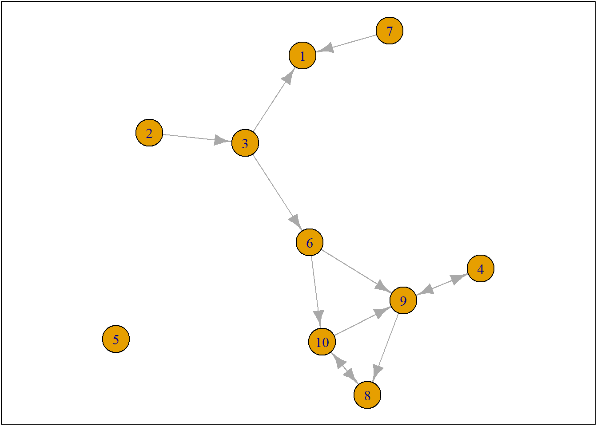
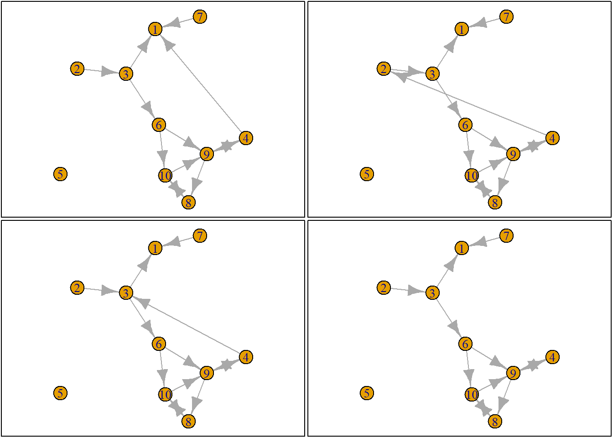
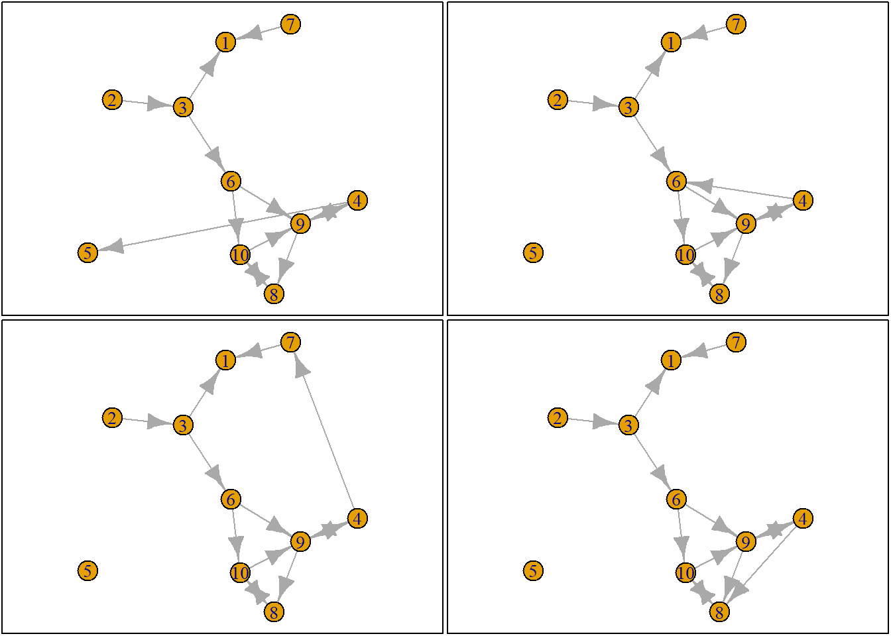
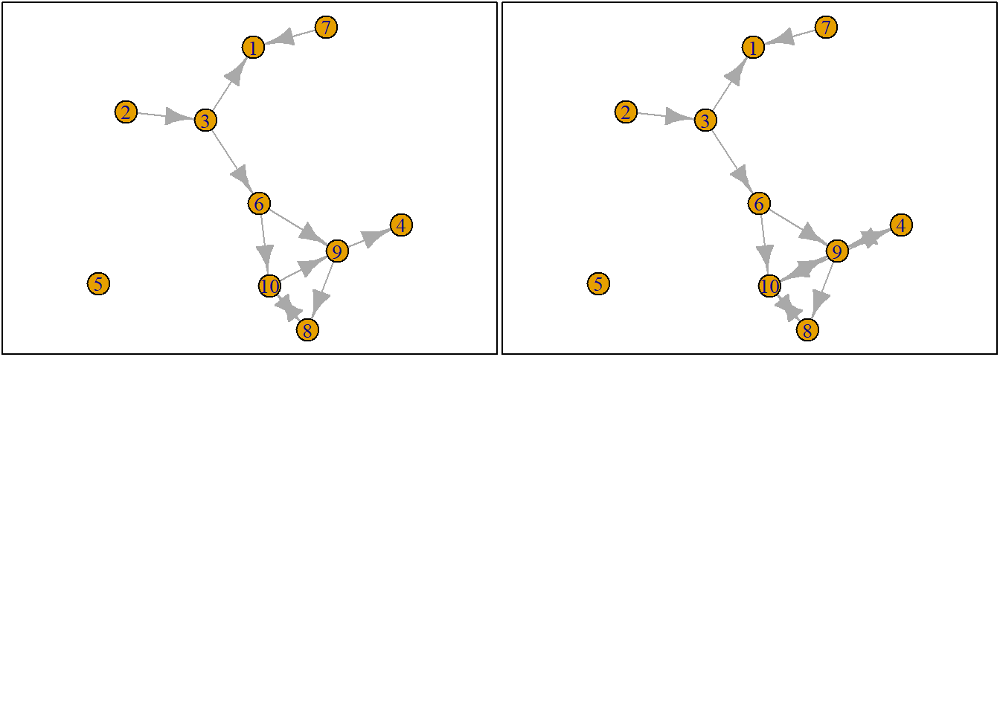

fpackage.check <- function(packages) {
lapply(packages, FUN = function(x) {
if (!require(x, character.only = TRUE)) {
install.packages(x, dependencies = TRUE)
library(x, character.only = TRUE)
}
})
}
fsave <- function(x, file = NULL, location = "./data/processed/") {
ifelse(!dir.exists("data"), dir.create("data"), FALSE)
ifelse(!dir.exists("data/processed"), dir.create("data/processed"), FALSE)
if (is.null(file))
file = deparse(substitute(x))
datename <- substr(gsub("[:-]", "", Sys.time()), 1, 8)
totalname <- paste(location, datename, file, ".rda", sep = "")
save(x, file = totalname) #need to fix if file is reloaded as input name, not as x.
}
fload <- function(filename) {
load(filename)
get(ls()[ls() != "filename"])
}
fshowdf <- function(x, ...) {
knitr::kable(x, digits = 2, "html", ...) %>%
kableExtra::kable_styling(bootstrap_options = c("striped", "hover")) %>%
kableExtra::scroll_box(width = "100%", height = "300px")
}
colorize <- function(x, color) {
sprintf("<span style='color: %s;'>%s</span>", color, x)
}#remove.packages("rlang")
#install.packages("rlang")
#library(rlang)
packages = c("RSiena", "devtools", "igraph")
fpackage.check(packages)## Loading required package: devtools## Warning: package 'devtools' was built under R version 4.5.3## Loading required package: usethis## Warning: package 'usethis' was built under R version 4.5.3## [[1]]
## NULL
##
## [[2]]
## NULL
##
## [[3]]
## NULLdevtools::install_github('JochemTolsma/RsienaTwoStep', build_vignettes=TRUE)## Warning: `install_github()` was deprecated in devtools 2.5.0.
## ℹ Please use pak::pak("user/repo") instead.
## This warning is displayed once per session.
## Call `lifecycle::last_lifecycle_warnings()` to see where this warning was generated.## Using GitHub PAT from the git credential store.## Skipping install of 'RsienaTwoStep' from a github remote, the SHA1 (8071f56c) has not changed since last install.
## Use `force = TRUE` to force installationpackages = c("RsienaTwoStep")
fpackage.check(packages)## Loading required package: RsienaTwoStep## Loading required package: foreach## Warning: package 'foreach' was built under R version 4.5.3##
## Attaching package: 'foreach'## The following objects are masked from 'package:purrr':
##
## accumulate, when## [[1]]
## NULLlibrary(RsienaTwoStep)Evolutie van netwerk, proces verklaren
Schat de regels van agents, sociale actoren, hoe zij hun gedrag/ties kunnen veranderen
Als we de regels correct hebben, leidt dat het netwerk dat we wel osberverne op T1
Niet precies het netwerk van T1, zelfde netwerkstructuren en statistieken
Dit zijn target statistics
Regels die we toekennen aan social agents, micro-theory of action (Coleman’s BT)
Gedrag afhankelijk van situatie
Regels zelf kunnen veranderen over de loop van de tijd
Maar regels kunnen ook constant blijven, maar niet altijd even relevant
Recprociteit isa lleen relevant als je relaties hebt, bijvoorbeeld
Regels kunnen alleen relevant zijn voor sommige mensen
Start: nadenken over regels
Via regels netwerken simuleren (= ABM)
Als we de regels begrijpen, snappen we het schatten in RSiena beter
Discussie in RSiena, assumpties in software om te kunnen schatten
Ministep-assumptie, alle netwerkveranderingen hakken we in stukjes in hele kleine stapjes, kleinst mogelijk (dat zijn mini-steps); daardoor alle veranderingen zijn aaneenschakeling van mini steps
Een actor per keer, één verandering
Dat is dus één beslissing over een tie-verandering OF gedragsverandering
Tie-verandering: tie verbreken of maken (teglijkertijd beslissing over behouden)
Claim: Dit is theorie-neutraal (Jochem: Dat is niet waar)
Me welke groep wil ik vrienden worden?
Ik wil alleen vrienden worden als ik met iedereen vrienden wordt? Dus beslissing niet over één tie, maar over alle ties. Of beslissing die je samen wil maken. Dat is een soort social network perspectief, ik ga alleen iemand helpen als jij ook helpt (interdependentie aan de voorkant van de beslissing)
Dit doet het model allemaal niet,
1 agent, 1 beslissing
Elke actie kan in stukjes gebroken worden tot het kleinst mogelijke stapje
Eerst vrienden met A, dan vrienden met B
Met mini-stepjes kom je in elk mogelijke configurarie
Maar is dat het echte data-generation process (DGP)?
Vervolgvraag: is dat erg? Volgens Jochem niet
Zij zeggen: die theory of action komt pas tot uiting bij de assumptie dat elke persoon één beslissing neemt, soms neem je één beslissing over meerdere relaties (zie bovenstaand) (kan niet gemodelleerd worden in RSiena)
Er zijn meerdere assumpties binnen die mini-steps
Wie de volgende beslissing neemt, is onafhankelijk van wie de vorige beslissing nam (er is geen reactiviteit, maar dat is tegenwoordig ingebouw in RSiena)
Rsiena simuleert mini-stepjes
Wie mag er een mini-step maken? Dat is in principe random, onafhankelijk van of je betrokken bent geweest bij de vorige mini-step (vreemd, met de realiteit; denk bijvoorbeeld aan vriendschap of pesten)
Wat er ook niet in zit, is simultaneous
Netwerk is één groot ding; zou puur toeval kunnen zijn dat twee mensen tegelijkertijd een relatie maken (toeval/coördinatie, zit er niet in)
Onderhandeling ook niet
Beslissing welke tie; hoe evalueer je dat? Door te kijken naar je egocentrisch netwerk; als ik die tie-vorm, hoe ziet mijn egonet eruit? En vind ik dat fijner? Egoïstisch utility optimalization, for each individual
Hypothese op micro-niveau
Niet redeneren vanuit groepsbelang, wel utility optimalization aanpassen
Daardoor kun je ook niet super strategisch handelen, investeren kan niet
Vooruit kijken, agents zijn myopic (bijziend)
Eerst volgende stap, eigen cocon
Sluit aan op rational action theory (mijn utility, nu)
Als je niet vooruit kunt kijken, kun je niet achteruit kijken (zou je erin kunnen bouwen, erin coderen)
Kunt met iemand tie aangaan, verbreken, aangaan, verbreken (dat is ook best onrealistisch, zou je kunnen aanpassen via tijdsvariabele)
Verschil RSiena en regressieanalyse
Regressieanalyse is puur statistisch
Rsiena zijn theoretische assumpties, over hoe gedrag werkt
In-degree, hoeveel ties naar een actor
Out-degree, hoeveel ties eruit
Via de rate function, kun je aangeven wie een grotere kans heeft om een mini-stap te maken
Random function: gebruik sample()
Als 4 omringd is door 9 anderen, dan heeft hij 10 keuzes (8 nieuwe ties, verbreken, en behouden)
Keuze maken tussen al deze opties, hoe evalueert ego deze opties? Hoe kiest ze?
Hier komt de micro-theory of action (netwerkstatistieken/effecten)
Welke zijn we tegengekomen, als netwerkstructuur?
Degree, egoniveau (hoeveel ties) & netwerk (density)
Reciprociteit
Voorbeeld degree, elke tie + 3
Heel veel score 6, eentje 0, eentje 3
Netwerken geëvalueerd, nu eentje kiezen
Zoek alle maxima, meerdere? kies willekeurig
Maar dan zit er geen stoichastische component meer in, deterministische component
Heb je een volledig overzicht van je scores? Maak je altijd de juiste keuze? In het echt, niet (we willen een stoichastische component, willekeur, maar wel recht doen aan die verschillende evaluatiescores? Via wegen)
Zie options[[1]]
Kijk naar degree voor ego (4)
Binnen optie 1 heeft ego 4 2 out-degrees
Dat doe je voor alle netwerken
Kan ook voor reciproce relaties via ts_recip)
Nu hebben we twee statistieken, hoeveel transitive triads heeft ie na elke configuratie?
Dit zijn de statistieken/effecten waar wij onze hypotheses over opstellen
Onze hypotheses moeten zich vertalen naar deze statistieken
Zie de manual voor de inhoud van de functies
Dit gaat allemaal over relaties, gedrag bespreken we later (maar zelfde logica)
Waarde toekennen aan netwerken, hoe belangrijk vind ik degree? hoe belangrijk is reciprocity?
Dat zijn de parameters, dit is de output
Ik denk dat degree/reciprocity
H: effecten zijn niet nul (two-sided test)
Uit het model, resultaat = degree = 3 (met standard error)
Andere zijn effecten (zie vorige)
Wat zou actor 4 belangrijk kunnen vinden? Sturen van ties (degrees) bijvoorbeeld
Dit zijn de effectstructuren die in het model opgenomen worden
Alleen je weet niet hoe belangrijk het effect is, dat moet het model schatten
We hebben effecten bepaald, en twee parameters gevonden
Statistic degree = -1 (waarde van een tie)
Reciprociteit = 1.5
We weten hoeveel ties en hoeveel reciprociteit
En we weten welke waardes we hebben
Dat moeten we optellen (3.2.4.)
si = mijn statistiek
i = voor actor i
T = transpose (negeren we voor nu, we hebben veel effecten, gaan we draaien?)
B = parameters (die klappen we uit) (uitkomst van je model)
We vermeningvuldigen (hoeveel degrees + waarde degrees) + (aantal reciproce relaties * waarde reciprociteit) (allemaal optellen)
Voor optie 4 = .5
Een tie = -1
een reciproce relatie = 1.5
Dus waarde = 0.5
Model kiest parameters die (iedereen beslissingen maken op basis van deze regels)
Grootste kans tot netwerk wat je observeert (stoichastisch)
Lijkt op regressievergelijking (maar die zijn deterministisch, sum of squares, schat één parameter) terwijl RSiena probeert een netwerk na te bootsen (zoekt parameters die het beste aansluiten bij het echte netwerk, mini-steps)
Je kiest statistieken, model schat parameters (hoe belangrijk die dingen zijn)
Twee uitkomsten (-1 en 1.5)
Op basis daarvan score voor ieder netwerk
Doen we voor ieder netwerk
Veel netwerken zelfde score
Hoe ze geëvalueerd worden
Netwerk met de hoogte score, meest likely
Dat is hier het netwerk met .5
We willen het niet deterministisch doen, dus we moeten wegen (kans-factor)
We wegen via McFadden’s choice function
Dus welke waade ligt een kans? 0 en 1
De totale kans moet 1 zijn
Dus alle scores tussen 0 en 1
En opgeteld = 1
Dus we transformeren getallen naar waarde 0 - 1
Dat doen we door de exponent te nemen (3.2.5)
Om te zorgen dat de totale kans 1 is, delen we door som van alle getalen
exp(-0.5) # dit werkt## [1] 0.60653070.6 / 7.4 (exp van netwerk 4, gedeeld door totale waarde) (8 * 0.6 + 1 + 1.6) = 0.08 (x8)
Nu voor netwerk met waarde 0 = 1 / 7 = 0.14
Nu voor netwerk met waarde 0.5 = 0.22
De hoogste kans dat één van de opties wordt gekozen die het vaakst voorkomt
Dit is de choice functie
choice <- sample(1:length(eval), size = 1, prob = exp(eval) / sum(exp(val)))
Antwoord 10: 10de netwerk
Nu is het netwerk anders voor iedereen
Na het mini-stapje mag iemand anders een keuze maken
Mark of chain (alle netwerken afhankelijk van elkaar)
Dit doen we super vaak, maar wanneer stoppen we?
Verschillende keuzes
Kijk netwerk op T1 en T2
Hoeveel tie-changes om van 1 naar 2 te komen? Zo vaak mag er gewisseld worden
Wat je ook kan doen, maak een parameter van (probeer met 4 per persoon, 5 gemiddeld, etc)
Wanneer kom je bij je netwerk? Je stopbeslissing mee modeleren, dat is de interpretatie van je rate parameter (model rate parameter = 2, dat er gemiddeld genomen 2 tie-changes zijn geweest per actor)
Positieve parameter: groter de parameter, hoe sterker positief hoe belangrijker iemand die parameter vindt (voor één actor, en dat dan heel vaak, dus gemiddeld genomen vinden actors dus reciprociteit dus belangrijk bij een beslissing)
Interpretatie op micro-theorie niveau (beslisregels voor actoren)
Dat weten we niet of het belang is voor de macro-structuur op T2!! We weten dat individuen, als ze mogen keizen overmini-steps, dat ze dan reciprociet belangrijk vinden (maar niet of het de macro-structuur veroorzaakt)
Negatieve waardes: proberen te voorkomen
Twee statistieken, 4 en 5 (belangrijker) (netwerkeffect)
Super lastig om met één tie-change maar één statistiek te veranderen (bij degree verander je altijd ook andere zaken in het netwerk, lastig om uit elkaar te trekken)
Rule of thumb, niet beginnen met meest complexe statistieken
Kleinere effecten zitten onder complexere effecten
Degree soort intercept
Hoeveel ties stuur je (out-degree, dat is effect degree)
Een actor kan niet beslissen over in-degree, geen invloed hebben
Logistische regressie (zo gaat de interpreteer)
In eindwerkstuk: effecten interpreteren, start eenvoudig
Hij is positief of negatief
Positief: vind dit fijn
Negatief: vind dit niet fijn
Positiever: netwerkeffect is belangrijker in beslissing
Als ze ook in mijn beslissing een rol spelen!! Als niet van toepassing, dan beslissing niet beïnvloed (geef meer gewicht aan A, als A een rol speelt)
Degree effect = 0
Maak tie, 0 out-degrees (0) [1\1+1 = 0.5]
Doe niks, 1 out-degree (0) (want 0 * 1)
Evaluatiefunctie invullen, exp(0) = 1
Kans op tie-vormen is 0.5
Degree effect = -0.5
Kans groter dat je geen tie vormt, dan dat je wel een tie vormt
1 / 1 + 0.6 = 0.6
Dus kans op de andere = 0.4 (0.6 / 1.6)
Als p(0.4) dat je een tie vormt, wat is dan de density in het netwerk als geheel? 0.4
Meestal is degree parameter negatief, omdat het waarschijnlijker is dat er geen tie is dan dat er wel een tie is. Wat je dan vaak doet, dat je daar ratio’s van maakt.
Via exp() en dan is de uitkomst log-odds ratio
Omzetten naar odds ratio (parameters)
Grootte, compositie: netwerkstatistieken
Wat voor netwerkstatistiek: actors,
Egokenmerk: kan ook een statistiek zijn die je opneemt (dingen die kunnen veranderen, of statistich zijn: dynamische/stabiele egokenmerken; kunnen kans beïnvloeden dat er een tie voorkomt)
Laat je de hypothese aansluiten op het mechanisme of de toetsing?
Egokenmerk, jouw gender (of jij ties wil sturen)
Alterkenmerk, jouw gender (of iemand anders een tie naar jou wil sturen)
In je dataset heb je ego- en alterkenmerken, ene keer in de rol van alter, andere keer in de rol van ego
Beredeneer vanuit ego’s stuurgedrag (niet wat zijn ontvangen)
Het sturen naar blauw heeft een waarde +1
Het sturen uberhaupt heeft ook een waarde van +1
In een netwerk waarin naar blauw wordt gestuurd (2)
In een netwerk waarin naar roze wordt gestuurd (1)
In een netwerk zonder tie (0)
Of een actor blauw is, is een alterkenmerk
\[x_{ij}\]
\[s = \Sigma_j x_{ij}\]
Sommeer over j, kijk of een relatie van i naar j en van j naar i
Dus reciprociteit
Dit staat allemaal in de manual, niet overschrijven
i = ego
j = alter
\[x_{ij}\]
#library(RsienaTwoStep)
#library(igraph)
ts_net1## [,1] [,2] [,3] [,4] [,5] [,6] [,7] [,8] [,9] [,10]
## [1,] 0 0 0 0 0 0 0 0 0 0
## [2,] 0 0 1 0 0 0 0 0 0 0
## [3,] 1 0 0 0 0 1 0 0 0 0
## [4,] 0 0 0 0 0 0 0 0 1 0
## [5,] 0 0 0 0 0 0 0 0 0 0
## [6,] 0 0 0 0 0 0 0 0 1 1
## [7,] 1 0 0 0 0 0 0 0 0 0
## [8,] 0 0 0 0 0 0 0 0 0 1
## [9,] 0 0 0 1 0 0 0 1 0 0
## [10,] 0 0 0 0 0 0 0 1 1 0net1g <- graph_from_adjacency_matrix(ts_net1, mode = "directed")
coords <- layout_(net1g, nicely()) #let us keep the layout
par(mar = c(0.1, 0.1, 0.1, 0.1))
{
plot.igraph(net1g, layout = coords)
graphics::box()
}
set.seed(24553253)
ego <- ts_select(net = ts_net1)
ego## [1] 4options <- ts_alternatives_ministep(net = ts_net1, ego = ego)
options## [[1]]
## [,1] [,2] [,3] [,4] [,5] [,6] [,7] [,8] [,9] [,10]
## [1,] 0 0 0 0 0 0 0 0 0 0
## [2,] 0 0 1 0 0 0 0 0 0 0
## [3,] 1 0 0 0 0 1 0 0 0 0
## [4,] 1 0 0 0 0 0 0 0 1 0
## [5,] 0 0 0 0 0 0 0 0 0 0
## [6,] 0 0 0 0 0 0 0 0 1 1
## [7,] 1 0 0 0 0 0 0 0 0 0
## [8,] 0 0 0 0 0 0 0 0 0 1
## [9,] 0 0 0 1 0 0 0 1 0 0
## [10,] 0 0 0 0 0 0 0 1 1 0
##
## [[2]]
## [,1] [,2] [,3] [,4] [,5] [,6] [,7] [,8] [,9] [,10]
## [1,] 0 0 0 0 0 0 0 0 0 0
## [2,] 0 0 1 0 0 0 0 0 0 0
## [3,] 1 0 0 0 0 1 0 0 0 0
## [4,] 0 1 0 0 0 0 0 0 1 0
## [5,] 0 0 0 0 0 0 0 0 0 0
## [6,] 0 0 0 0 0 0 0 0 1 1
## [7,] 1 0 0 0 0 0 0 0 0 0
## [8,] 0 0 0 0 0 0 0 0 0 1
## [9,] 0 0 0 1 0 0 0 1 0 0
## [10,] 0 0 0 0 0 0 0 1 1 0
##
## [[3]]
## [,1] [,2] [,3] [,4] [,5] [,6] [,7] [,8] [,9] [,10]
## [1,] 0 0 0 0 0 0 0 0 0 0
## [2,] 0 0 1 0 0 0 0 0 0 0
## [3,] 1 0 0 0 0 1 0 0 0 0
## [4,] 0 0 1 0 0 0 0 0 1 0
## [5,] 0 0 0 0 0 0 0 0 0 0
## [6,] 0 0 0 0 0 0 0 0 1 1
## [7,] 1 0 0 0 0 0 0 0 0 0
## [8,] 0 0 0 0 0 0 0 0 0 1
## [9,] 0 0 0 1 0 0 0 1 0 0
## [10,] 0 0 0 0 0 0 0 1 1 0
##
## [[4]]
## [,1] [,2] [,3] [,4] [,5] [,6] [,7] [,8] [,9] [,10]
## [1,] 0 0 0 0 0 0 0 0 0 0
## [2,] 0 0 1 0 0 0 0 0 0 0
## [3,] 1 0 0 0 0 1 0 0 0 0
## [4,] 0 0 0 0 0 0 0 0 1 0
## [5,] 0 0 0 0 0 0 0 0 0 0
## [6,] 0 0 0 0 0 0 0 0 1 1
## [7,] 1 0 0 0 0 0 0 0 0 0
## [8,] 0 0 0 0 0 0 0 0 0 1
## [9,] 0 0 0 1 0 0 0 1 0 0
## [10,] 0 0 0 0 0 0 0 1 1 0
##
## [[5]]
## [,1] [,2] [,3] [,4] [,5] [,6] [,7] [,8] [,9] [,10]
## [1,] 0 0 0 0 0 0 0 0 0 0
## [2,] 0 0 1 0 0 0 0 0 0 0
## [3,] 1 0 0 0 0 1 0 0 0 0
## [4,] 0 0 0 0 1 0 0 0 1 0
## [5,] 0 0 0 0 0 0 0 0 0 0
## [6,] 0 0 0 0 0 0 0 0 1 1
## [7,] 1 0 0 0 0 0 0 0 0 0
## [8,] 0 0 0 0 0 0 0 0 0 1
## [9,] 0 0 0 1 0 0 0 1 0 0
## [10,] 0 0 0 0 0 0 0 1 1 0
##
## [[6]]
## [,1] [,2] [,3] [,4] [,5] [,6] [,7] [,8] [,9] [,10]
## [1,] 0 0 0 0 0 0 0 0 0 0
## [2,] 0 0 1 0 0 0 0 0 0 0
## [3,] 1 0 0 0 0 1 0 0 0 0
## [4,] 0 0 0 0 0 1 0 0 1 0
## [5,] 0 0 0 0 0 0 0 0 0 0
## [6,] 0 0 0 0 0 0 0 0 1 1
## [7,] 1 0 0 0 0 0 0 0 0 0
## [8,] 0 0 0 0 0 0 0 0 0 1
## [9,] 0 0 0 1 0 0 0 1 0 0
## [10,] 0 0 0 0 0 0 0 1 1 0
##
## [[7]]
## [,1] [,2] [,3] [,4] [,5] [,6] [,7] [,8] [,9] [,10]
## [1,] 0 0 0 0 0 0 0 0 0 0
## [2,] 0 0 1 0 0 0 0 0 0 0
## [3,] 1 0 0 0 0 1 0 0 0 0
## [4,] 0 0 0 0 0 0 1 0 1 0
## [5,] 0 0 0 0 0 0 0 0 0 0
## [6,] 0 0 0 0 0 0 0 0 1 1
## [7,] 1 0 0 0 0 0 0 0 0 0
## [8,] 0 0 0 0 0 0 0 0 0 1
## [9,] 0 0 0 1 0 0 0 1 0 0
## [10,] 0 0 0 0 0 0 0 1 1 0
##
## [[8]]
## [,1] [,2] [,3] [,4] [,5] [,6] [,7] [,8] [,9] [,10]
## [1,] 0 0 0 0 0 0 0 0 0 0
## [2,] 0 0 1 0 0 0 0 0 0 0
## [3,] 1 0 0 0 0 1 0 0 0 0
## [4,] 0 0 0 0 0 0 0 1 1 0
## [5,] 0 0 0 0 0 0 0 0 0 0
## [6,] 0 0 0 0 0 0 0 0 1 1
## [7,] 1 0 0 0 0 0 0 0 0 0
## [8,] 0 0 0 0 0 0 0 0 0 1
## [9,] 0 0 0 1 0 0 0 1 0 0
## [10,] 0 0 0 0 0 0 0 1 1 0
##
## [[9]]
## [,1] [,2] [,3] [,4] [,5] [,6] [,7] [,8] [,9] [,10]
## [1,] 0 0 0 0 0 0 0 0 0 0
## [2,] 0 0 1 0 0 0 0 0 0 0
## [3,] 1 0 0 0 0 1 0 0 0 0
## [4,] 0 0 0 0 0 0 0 0 0 0
## [5,] 0 0 0 0 0 0 0 0 0 0
## [6,] 0 0 0 0 0 0 0 0 1 1
## [7,] 1 0 0 0 0 0 0 0 0 0
## [8,] 0 0 0 0 0 0 0 0 0 1
## [9,] 0 0 0 1 0 0 0 1 0 0
## [10,] 0 0 0 0 0 0 0 1 1 0
##
## [[10]]
## [,1] [,2] [,3] [,4] [,5] [,6] [,7] [,8] [,9] [,10]
## [1,] 0 0 0 0 0 0 0 0 0 0
## [2,] 0 0 1 0 0 0 0 0 0 0
## [3,] 1 0 0 0 0 1 0 0 0 0
## [4,] 0 0 0 0 0 0 0 0 1 1
## [5,] 0 0 0 0 0 0 0 0 0 0
## [6,] 0 0 0 0 0 0 0 0 1 1
## [7,] 1 0 0 0 0 0 0 0 0 0
## [8,] 0 0 0 0 0 0 0 0 0 1
## [9,] 0 0 0 1 0 0 0 1 0 0
## [10,] 0 0 0 0 0 0 0 1 1 0plots <- lapply(options, graph_from_adjacency_matrix, mode = "directed")
par(mar = c(0, 0, 0, 0) + 0.1)
par(mfrow = c(2, 2))
fplot <- function(x) {
plot.igraph(x, layout = coords, margin = 0)
graphics::box()
}
lapply(plots, fplot)

## [[1]]
## NULL
##
## [[2]]
## NULL
##
## [[3]]
## NULL
##
## [[4]]
## NULL
##
## [[5]]
## NULL
##
## [[6]]
## NULL
##
## [[7]]
## NULL
##
## [[8]]
## NULL
##
## [[9]]
## NULL
##
## [[10]]
## NULLts_degree(net = options[[1]], ego = ego)## [1] 2sapply(options, ts_degree, ego = ego)## [1] 2 2 2 1 2 2 2 2 0 2sapply(options, ts_recip, ego = ego)## [1] 1 1 1 1 1 1 1 1 0 1option <- 4
ts_degree(options[[option]], ego = ego) * -1 + ts_recip(options[[option]], ego = ego) * 1.5## [1] 0.5eval <- ts_eval(net = options[[option]], ego = ego, statistics = list(ts_degree, ts_recip), parameters = c(-1,
1.5))
eval## [1] 0.5eval <- sapply(options, FUN = ts_eval, ego = ego, statistics = list(ts_degree, ts_recip), parameters = c(-1,
1.5))
eval## [1] -0.5 -0.5 -0.5 0.5 -0.5 -0.5 -0.5 -0.5 0.0 -0.5print("network with maximum evaluation score:")## [1] "network with maximum evaluation score:"which.max(eval)## [1] 4
fpackage.check <- function(packages) {
lapply(packages, FUN = function(x) {
if (!require(x, character.only = TRUE)) {
install.packages(x, dependencies = TRUE)
library(x, character.only = TRUE)
}
})
}
fsave <- function(x, file = NULL, location = "./data/processed/") {
ifelse(!dir.exists("data"), dir.create("data"), FALSE)
ifelse(!dir.exists("data/processed"), dir.create("data/processed"), FALSE)
if (is.null(file))
file = deparse(substitute(x))
datename <- substr(gsub("[:-]", "", Sys.time()), 1, 8)
totalname <- paste(location, datename, file, ".rda", sep = "")
save(x, file = totalname) #need to fix if file is reloaded as input name, not as x.
}
fload <- function(filename) {
load(filename)
get(ls()[ls() != "filename"])
}
fshowdf <- function(x, ...) {
knitr::kable(x, digits = 2, "html", ...) %>%
kableExtra::kable_styling(bootstrap_options = c("striped", "hover")) %>%
kableExtra::scroll_box(width = "100%", height = "300px")
}
# this is the most important one. We created it in the previous script
f_pubnets <- function(df_scholars = df, list_publications = publications, discip = "sociology", affiliation = "RU",
waves = list(wave1 = c(2018, 2019, 2020), wave2 = c(2021, 2022, 2023))) {
publications <- list_publications %>%
bind_rows() %>%
distinct(title, .keep_all = TRUE)
df_scholars %>%
filter(affil1 == affiliation | affil2 == affiliation) %>%
filter(discipline == discip) -> df_sel
networklist <- list()
for (wave in 1:length(waves)) {
networklist[[wave]] <- matrix(0, nrow = nrow(df_sel), ncol = nrow(df_sel))
}
publicationlist <- list()
for (wave in 1:length(waves)) {
publicationlist[[wave]] <- publications %>%
filter(gs_id %in% df_sel$gs_id) %>%
filter(year %in% waves[[wave]]) %>%
select(author) %>%
lapply(str_split, pattern = ",")
}
publicationlist2 <- list()
for (wave in 1:length(waves)) {
publicationlist2[[wave]] <- publicationlist[[wave]]$author %>%
# lowercase
lapply(tolower) %>%
# Removing diacritics
lapply(stri_trans_general, id = "latin-ascii") %>%
# only last name
lapply(word, start = -1, sep = " ") %>%
# only last last name
lapply(word, start = -1, sep = "-")
}
for (wave in 1:length(waves)) {
# let us remove all publications with only one author
remove <- which(sapply(publicationlist2[[wave]], FUN = function(x) length(x) == 1) == TRUE)
publicationlist2[[wave]] <- publicationlist2[[wave]][-remove]
}
for (wave in 1:length(waves)) {
pubs <- publicationlist2[[wave]]
for (ego in 1:nrow(df_sel)) {
# which ego?
lastname_ego <- df_sel$lastname[ego]
# for all publications
for (pub in 1:length(pubs)) {
# only continue if ego is author of pub
if (lastname_ego %in% pubs[[pub]]) {
aut_pot <- which.max(pubs[[pub]] %in% lastname_ego)
# only continue if ego is first author of pub
if (aut_pot == 1) {
# check all alters/co-authors
for (alter in 1:nrow(df_sel)) {
# which alter
lastname_alter <- df_sel$lastname[alter]
if (lastname_alter %in% pubs[[pub]]) {
networklist[[wave]][ego, alter] <- networklist[[wave]][ego, alter] + 1
}
}
}
}
}
}
}
return(list(df = df_sel, network = networklist))
}packages = c("RSiena", "tidyverse", "stringdist", "stringi")
fpackage.check(packages)## Loading required package: stringdist## Warning: package 'stringdist' was built under R version 4.5.2##
## Attaching package: 'stringdist'## The following object is masked from 'package:tidyr':
##
## extract## Loading required package: stringi## [[1]]
## NULL
##
## [[2]]
## NULL
##
## [[3]]
## NULL
##
## [[4]]
## NULLdf <- fload("./Data/20230621df_complete.rda")
publications <- fload("./Data/20230621list_publications_jt.rda")output <- f_pubnets()
df_soc <- output[[1]]
df_network <- output[[2]]glimpse(df_soc)## Rows: 47
## Columns: 21
## $ id <chr> "471b42", "31144d", "888093", "c47638", "f99757", "7e85d6", "5f9d45", "3e9d…
## $ uni <chr> "RU", "RU", "RU", "RU", "RU", "RU", "RU", "RU", "RU", "RU", "RU", "RU", "RU…
## $ discipline <chr> "sociology", "sociology", "sociology", "sociology", "sociology", "sociology…
## $ year <dbl> 2022, 2022, 2022, 2022, 2022, 2022, 2022, 2022, 2022, 2022, 2022, 2022, 202…
## $ name <chr> "Ronald Batenburg", "Katia Begall", "Hidde Bekhuis", "Lonneke van den Berg"…
## $ affil1 <chr> "RU", "RU", "RU", "RU", "RU", "RU", "RU", "RU", "RU", "RU", "RU", "RU", "RU…
## $ affil2 <chr> "", "", "", "", "", "", "", "", "", "", "", "", "", "", "", "", "", "", "RU…
## $ position <chr> "full_prof", "assistant_prof", "other", "postdoc", "assistant_prof", "assis…
## $ np <chr> "", "", "", "van den", "", "", "", "", "", "van", "", "", "", "", "", "", "…
## $ lastname <chr> "batenburg", "begall", "bekhuis", "berg", "blommaert", "eisinga", "gesthuiz…
## $ firstname <chr> "ronald", "katia", "hidde", "lonneke", "lieselotte", "rob", "maurice", "nel…
## $ ini <chr> "", "", "", "", "", "", "", "", "", "", "", "", "", "", "", "", "", "", "",…
## $ gender <chr> "male", "female", "male", "female", "female", "male", "male", "female", "fe…
## $ gs_id <chr> "UK7nVSEAAAAJ", "e7zfTqMAAAAJ", "Q4saWX8AAAAJ", "vzBNQ1kAAAAJ", "RG54uasAAA…
## $ gs_name <chr> "Ronald Batenburg", "Katia Begall", "Hidde Bekhuis", "Lonneke van den Berg"…
## $ gs_homepage <chr> "https://www.nivel.nl/nl/ronald-batenburg", NA, NA, "https://lonnekevandenb…
## $ gs_field <chr> "Gezondheidszorg", "family sociology", "Sociologie", "Family sociology", "L…
## $ gs_i10_index <dbl> 94, 9, 9, 3, 11, 83, 45, 3, 6, 10, 17, 10, 4, 107, 10, 9, 190, 46, 38, 40, …
## $ gs_h_index <dbl> 33, 9, 9, 5, 11, 35, 28, 4, 7, 10, 13, 10, 6, 51, 10, 9, 64, 27, 25, 26, 10…
## $ gs_total_cites <dbl> 4306, 1268, 458, 79, 479, 6401, 2972, 90, 223, 487, 918, 966, 110, 9279, 30…
## $ gs_affiliation <chr> "Programmaleider NIVEL en bijzonder hoogleraar Radboud Universiteit Nijmege…glimpse(publications)## List of 462
## $ :'data.frame': 7 obs. of 9 variables:
## ..$ title : chr [1:7] "Trade for the Environment: Transboundary Hazardous Waste Movements After the Basel Convention" "Political economy of vaccine diplomacy: explaining varying strategies of China, India, and Russia’s COVID-19 vaccine diplomacy" "Rising-power competition: The Covid-19 vaccine diplomacy of China and India" "Fiscal decentralization or centralization: diverging paths of Chinese cities" ...
## ..$ author : chr [1:7] "S Yang" "M Suzuki, S Yang" "S Yang" "S Yang" ...
## ..$ journal: chr [1:7] "Review of Policy Research" "Review of International Political Economy" "National Bureau of Asian Research" "China & World Economy" ...
## ..$ number : chr [1:7] "" "1-26" "" "27 (3), 102-125" ...
## ..$ cites : num [1:7] 21 17 10 5 0 0 0
## ..$ year : num [1:7] 2020 2022 2021 2019 2023 ...
## ..$ cid : chr [1:7] "9676866917701409464" "420249066433756503" "10088810798376166566" "4878856060569614426" ...
## ..$ pubid : chr [1:7] "u5HHmVD_uO8C" "Y0pCki6q_DkC" "Tyk-4Ss8FVUC" "u-x6o8ySG0sC" ...
## ..$ gs_id : chr [1:7] "_c8zK5cAAAAJ" "_c8zK5cAAAAJ" "_c8zK5cAAAAJ" "_c8zK5cAAAAJ" ...
## $ :'data.frame': 85 obs. of 9 variables:
## ..$ title : chr [1:85] "Dealing with urban diversity: Promises and challenges of city life for intercultural citizenship" "On the affective ambivalence of living with cultural diversity" "A formal recognition of social attachments: Expanding Axel Honneth's theory of recognition" "Erkenning, identiteit en verschil: multiculturalisme en leven met culturele diversiteit" ...
## ..$ author : chr [1:85] "B Van Leeuwen" "B Van Leeuwen" "B Van Leeuwen" "B Van Leeuwen" ...
## ..$ journal: chr [1:85] "Political theory" "Ethnicities" "Inquiry" "Acco" ...
## ..$ number : chr [1:85] "38 (5), 631-657" "8 (2), 147-176" "50 (2), 180-205" "" ...
## ..$ cites : num [1:85] 94 64 61 54 32 31 23 20 16 16 ...
## ..$ year : num [1:85] 2010 2008 2007 2003 2008 ...
## ..$ cid : chr [1:85] "13045879770481105402" "15879126852872129929" "6123684820325734302" "8070756023285935771" ...
## ..$ pubid : chr [1:85] "9yKSN-GCB0IC" "u-x6o8ySG0sC" "d1gkVwhDpl0C" "u5HHmVD_uO8C" ...
## ..$ gs_id : chr [1:85] "03J6NYkAAAAJ" "03J6NYkAAAAJ" "03J6NYkAAAAJ" "03J6NYkAAAAJ" ...
## $ :'data.frame': 132 obs. of 9 variables:
## ..$ title : chr [1:132] "Trust in the employer: The role of high-involvement work practices and procedural justice in European organizations" "The trust process in organizations: Empirical studies of the determinants and the process of trust development" "Creating a high‐trust organization: An exploration into organizational policies that stimulate interpersonal trust building" "The trouble with trust: The dynamics of interpersonal trust building" ...
## ..$ author : chr [1:132] "R Searle, DN Den Hartog, A Weibel, N Gillespie, F Six, T Hatzakis, ..." "B Nooteboom, F Six" "F Six, A Sorge" "F Six" ...
## ..$ journal: chr [1:132] "The International Journal of Human Resource Management" "Edward Elgar Publishing" "Journal of Management Studies" "Edward Elgar Publishing" ...
## ..$ number : chr [1:132] "22 (05), 1069-1092" "" "45 (5), 857-884" "" ...
## ..$ cites : num [1:132] 330 270 260 246 212 197 173 158 112 111 ...
## ..$ year : num [1:132] 2011 2003 2008 2008 2007 ...
## ..$ cid : chr [1:132] "18248651772006395857" "3360468110157069046,8035972067018160910" "4187909582551013911" "4173884535766161600" ...
## ..$ pubid : chr [1:132] "g5m5HwL7SMYC" "roLk4NBRz8UC" "3fE2CSJIrl8C" "MXK_kJrjxJIC" ...
## ..$ gs_id : chr [1:132] "0417qCkAAAAJ" "0417qCkAAAAJ" "0417qCkAAAAJ" "0417qCkAAAAJ" ...
## $ :'data.frame': 176 obs. of 9 variables:
## ..$ title : chr [1:176] "The state and the reconstruction of civil society" "Managed liberalization of the Dutch welfare state: A review and analysis of the reform of the Dutch social secu"| __truncated__ "Police, managerialization and presentational strategies" "Gulzig bestuur" ...
## ..$ author : chr [1:176] "T Brandsen, W Trommel, B Verschuere" "R Van der Veen, W Trommel" "J Terpstra, W Trommel" "WA Trommel" ...
## ..$ journal: chr [1:176] "International Review of Administrative Sciences" "Governance" "Policing: An International Journal of Police Strategies & Management" "Lemma" ...
## ..$ number : chr [1:176] "83 (4), 676-693" "12 (3), 289-310" "32 (1 …" "" ...
## ..$ cites : num [1:176] 140 105 89 79 58 51 46 34 33 33 ...
## ..$ year : num [1:176] 2017 1999 2009 2009 2019 ...
## ..$ cid : chr [1:176] "17517955650321900907" "11021008459037113887" "1779691224919346016" "6158177272561417990" ...
## ..$ pubid : chr [1:176] "XiVPGOgt02cC" "4OULZ7Gr8RgC" "YsMSGLbcyi4C" "e5wmG9Sq2KIC" ...
## ..$ gs_id : chr [1:176] "0FSBoLUAAAAJ" "0FSBoLUAAAAJ" "0FSBoLUAAAAJ" "0FSBoLUAAAAJ" ...
## $ :'data.frame': 42 obs. of 9 variables:
## ..$ title : chr [1:42] "Orchestrating Sustainability: The Case of European Union Biofuel Governance" "The 2014 Global Climate Legislation Study: A Review of Climate Change Legislation in 66 Countries" "Emerging markets and private governance: the political economy of sustainable palm oil in China and India" "Reviewing the impact of sustainability certification on food security in developing countries" ...
## ..$ author : chr [1:42] "P Schleifer" "M Nachmany, S Fankhauser, T Townshend, M Collins, T Landesman, ..." "P Schleifer, Y Sun" "P Schleifer, Y Sun" ...
## ..$ journal: chr [1:42] "Regulation & Governance" "GLOBE International and Grantham Research Institute, LSE" "Review of International Political Economy" "Global Food Security" ...
## ..$ number : chr [1:42] "7 (4), 533-546" "" "25 (2), 190-214" "24, 100337" ...
## ..$ cites : num [1:42] 120 111 83 82 73 68 56 55 51 43 ...
## ..$ year : num [1:42] 2013 2014 2018 2020 2014 ...
## ..$ cid : chr [1:42] "8001191052108557832" "15467112886869861308" "48437556035478106" "4609792537457434762" ...
## ..$ pubid : chr [1:42] "u-x6o8ySG0sC" "lSLTfruPkqcC" "QIV2ME_5wuYC" "TFP_iSt0sucC" ...
## ..$ gs_id : chr [1:42] "0jN3bk4AAAAJ" "0jN3bk4AAAAJ" "0jN3bk4AAAAJ" "0jN3bk4AAAAJ" ...
## $ :'data.frame': 10 obs. of 9 variables:
## ..$ title : chr [1:10] "The politicisation of the European Central Bank and its emergency credit lines outside the Euro Area" "Financial adjustment as a driver of growth model change: a balance-sheet approach to comparative political economy" "What is dead may never die–How the Stability and Growth Pact was remade during the Euro Crisis" "Youth and Democracy: Digital Opportunities for the Future of Participation" ...
## ..$ author : chr [1:10] "L Spielberger" "L Spielberger, D Voss" "L Spielberger" "A Ambrosino, SC Birk, C Mingardi, G Nikolou, L Spielberger, E Thevenin, ..." ...
## ..$ journal: chr [1:10] "Journal of European Public Policy" "Comparative European Politics" "University of Twente" "Participatory and Digital Democracy at the Local Level: European Discourses …" ...
## ..$ number : chr [1:10] "1-25" "1-26" "" "" ...
## ..$ cites : num [1:10] 6 1 1 0 0 0 0 0 0 0
## ..$ year : num [1:10] 2022 2022 2016 2023 2023 ...
## ..$ cid : chr [1:10] "1354355389631751106" "13974708569203754722" "12906016699645797855" NA ...
## ..$ pubid : chr [1:10] "d1gkVwhDpl0C" "IjCSPb-OGe4C" "u5HHmVD_uO8C" "Tyk-4Ss8FVUC" ...
## ..$ gs_id : chr [1:10] "0vFvKiYAAAAJ" "0vFvKiYAAAAJ" "0vFvKiYAAAAJ" "0vFvKiYAAAAJ" ...
## $ :'data.frame': 103 obs. of 9 variables:
## ..$ title : chr [1:103] "Dutch women are liberated, migrant women are a problem: The evolution of policy frames on gender and migration "| __truncated__ "Diffusion Processes within and across Movements" "Framing immigration and integration: Relationships between press and parliament in the Netherlands" "Handbook of social movements across disciplines" ...
## ..$ author : chr [1:103] "C Roggeband, M Verloo" "SA Soule, C Roggeband" "R Vliegenthart, C Roggeband" "C Roggeband, B Klandermans" ...
## ..$ journal: chr [1:103] "Social policy & administration" "The Wiley Blackwell companion to social movements" "International Communication Gazette" "Springer" ...
## ..$ number : chr [1:103] "41 (3), 271-288" "236-251" "69 (3), 295-319" "" ...
## ..$ cites : num [1:103] 356 352 277 260 242 208 84 70 59 57 ...
## ..$ year : num [1:103] 2007 2018 2007 2017 2007 ...
## ..$ cid : chr [1:103] "7459151631579300352" "15527605292624857454" "2935183038159538184" "13232428607454612674" ...
## ..$ pubid : chr [1:103] "3fE2CSJIrl8C" "5Ul4iDaHHb8C" "zYLM7Y9cAGgC" "35N4QoGY0k4C" ...
## ..$ gs_id : chr [1:103] "18E6cPMAAAAJ" "18E6cPMAAAAJ" "18E6cPMAAAAJ" "18E6cPMAAAAJ" ...
## $ :'data.frame': 71 obs. of 9 variables:
## ..$ title : chr [1:71] "Anti‐immigrant parties in Europe: Ideological or protest vote?" "Political participation and political trust in Amsterdam: Civic communities and ethnic networks" "Why some anti-immigrant parties fail and others succeed: A two-step model of aggregate electoral support" "Civic community, political participation and political trust of ethnic groups" ...
## ..$ author : chr [1:71] "W Van der Brug, M Fennema, J Tillie" "M Fennema, J Tillie" "W Van der Brug, M Fennema, J Tillie" "M Fennema, J Tillie" ...
## ..$ journal: chr [1:71] "European Journal of Political Research" "Journal of ethnic and migration studies" "Comparative Political Studies" "Multikulturelle Demokratien im Vergleich: Institutionen als Regulativ …" ...
## ..$ number : chr [1:71] "37 (1), 77-102" "25 (4), 703-726" "38 (5), 537-573" "" ...
## ..$ cites : num [1:71] 807 775 651 441 363 338 145 122 119 98 ...
## ..$ year : num [1:71] 2000 1999 2005 2001 2004 ...
## ..$ cid : chr [1:71] "11665336035579949111" "13339840389001684339" "3747085016569251318" "18326076172636658459" ...
## ..$ pubid : chr [1:71] "u-x6o8ySG0sC" "u5HHmVD_uO8C" "d1gkVwhDpl0C" "9yKSN-GCB0IC" ...
## ..$ gs_id : chr [1:71] "1ggzA7MAAAAJ" "1ggzA7MAAAAJ" "1ggzA7MAAAAJ" "1ggzA7MAAAAJ" ...
## $ :'data.frame': 35 obs. of 9 variables:
## ..$ title : chr [1:35] "Institutional trust, education, and corruption: A micro-macro interactive approach" "The dynamics of voters’ left/right identification: The role of economic and cultural attitudes" "Euroscepticism and education: A longitudinal study of 12 EU member states, 1973–2010" "Political trust as the evaluation of process and performance: A cross-national study of 42 European countries" ...
## ..$ author : chr [1:35] "A Hakhverdian, Q Mayne" "CE De Vries, A Hakhverdian, B Lancee" "A Hakhverdian, E Van Elsas, W Van der Brug, T Kuhn" "T Van der Meer, A Hakhverdian" ...
## ..$ journal: chr [1:35] "The Journal of Politics" "Political Science Research and Methods" "European Union Politics" "Political Studies" ...
## ..$ number : chr [1:35] "74 (3), 739-750" "1 (2), 223-238" "14 (4), 522-541" "65 (1), 81-102" ...
## ..$ cites : num [1:35] 423 256 240 209 144 120 114 94 81 80 ...
## ..$ year : num [1:35] 2012 2013 2013 2017 2016 ...
## ..$ cid : chr [1:35] "15341339704822053252" "5546604949731640435" "9501362039136015079,14513389055618835325" "15647808723677749585" ...
## ..$ pubid : chr [1:35] "UebtZRa9Y70C" "0EnyYjriUFMC" "5nxA0vEk-isC" "4DMP91E08xMC" ...
## ..$ gs_id : chr [1:35] "1p8uveMAAAAJ" "1p8uveMAAAAJ" "1p8uveMAAAAJ" "1p8uveMAAAAJ" ...
## $ :'data.frame': 10 obs. of 9 variables:
## ..$ title : chr [1:10] "“WE ARE SONS OF THIS SOIL” The Endless Battle over Indigenous Homelands in Assam, India" "‘The liberation of Bodoland’: tea, forestry and tribal entrapment in Western Assam" "The state, the rebel and the chief: public authority and land disputes in Assam, India" "No Land, No Peace: Dynamics of Violent Conflict and Land Usein Assam." ...
## ..$ author : chr [1:10] "N Vandekerckhove" "N Vandekerckhove, B Suykens" "N Vandekerckhove" "N Vandekerckhove" ...
## ..$ journal: chr [1:10] "Critical Asian Studies" "South Asia: Journal of South Asian Studies" "Development and Change" "Ghent University" ...
## ..$ number : chr [1:10] "41 (4), 523-548" "31 (3), 450-471" "42 (3), 759-779" "" ...
## ..$ cites : num [1:10] 67 42 29 8 1 0 0 0 0 0
## ..$ year : num [1:10] 2009 2008 2011 2010 2020 ...
## ..$ cid : chr [1:10] "8298706349365722352" "9098069824406719242" "16420725957722899999" "10330908810059072022" ...
## ..$ pubid : chr [1:10] "35N4QoGY0k4C" "70eg2SAEIzsC" "M05iB0D1s5AC" "2P1L_qKh6hAC" ...
## ..$ gs_id : chr [1:10] "1uiyqRQAAAAJ" "1uiyqRQAAAAJ" "1uiyqRQAAAAJ" "1uiyqRQAAAAJ" ...
## $ :'data.frame': 16 obs. of 9 variables:
## ..$ title : chr [1:16] "Improved stoves in India: A study of sustainable business models" "Research note: cookstoves and obstacles to technology adoption by the poor" "To promote adoption of household health technologies, think beyond health" "Explaining deference: why and when do policymakers think FDI needs tax incentives?" ...
## ..$ author : chr [1:16] "G Shrimali, X Slaski, MC Thurber, H Zerriffi" "X Slaski, M Thurber" "MC Thurber, C Warner, L Platt, A Slaski, R Gupta, G Miller" "SB Danzman, A Slaski" ...
## ..$ journal: chr [1:16] "Energy Policy" "Program on energy and sustainable development, working paper" "American journal of public health" "Review of International Political Economy" ...
## ..$ number : chr [1:16] "39 (12), 7543-7556" "89" "103 (10), 1736-1740" "29 (4), 1085-1111" ...
## ..$ cites : num [1:16] 157 63 37 8 8 7 2 2 1 1 ...
## ..$ year : num [1:16] 2011 2009 2013 2022 2022 ...
## ..$ cid : chr [1:16] "2256630526604015424" "16389031012132077131" "3456623679051127198" "5551718056699283113" ...
## ..$ pubid : chr [1:16] "zYLM7Y9cAGgC" "WF5omc3nYNoC" "u-x6o8ySG0sC" "u5HHmVD_uO8C" ...
## ..$ gs_id : chr [1:16] "1YC0ju8AAAAJ" "1YC0ju8AAAAJ" "1YC0ju8AAAAJ" "1YC0ju8AAAAJ" ...
## $ :'data.frame': 12 obs. of 9 variables:
## ..$ title : chr [1:12] "Fording differences? Conditions mitigating water insecurity in the Niger River Basin" "Food price volatilities and civilian victimization in Africa" "Resisting Lockdown: The Influence of COVID-19 Restrictions on Social Unrest" "Secrecy and self-interest: When mediators act deceitfully" ...
## ..$ author : chr [1:12] "ST Landis, B Rezaeedaryakenari, Y Zhang, CG Thies, R Maciejewski" "B RezaeeDaryakenari, ST Landis, CG Thies" "R Wood, GY Reinhardt, B RezaeeDaryakenari, LC Windsor" "B RezaeeDaryakenari, CG Thies" ...
## ..$ journal: chr [1:12] "Political Geography" "Conflict Management and Peace Science" "International Studies Quarterly" "International Interactions" ...
## ..$ number : chr [1:12] "56, 77–90" "37 (2), 193-214" "66 (2), sqac015" "44 (4), 603-630" ...
## ..$ cites : num [1:12] 18 14 8 7 6 4 3 2 1 0 ...
## ..$ year : num [1:12] 2017 2020 2022 2018 2022 ...
## ..$ cid : chr [1:12] "10827196616516682641" "16236129807565372135" "8708528203287708456,727765465965473657" "14159839946290609537" ...
## ..$ pubid : chr [1:12] "u5HHmVD_uO8C" "u-x6o8ySG0sC" "_FxGoFyzp5QC" "d1gkVwhDpl0C" ...
## ..$ gs_id : chr [1:12] "2VfU564AAAAJ" "2VfU564AAAAJ" "2VfU564AAAAJ" "2VfU564AAAAJ" ...
## $ :'data.frame': 89 obs. of 9 variables:
## ..$ title : chr [1:89] "Migration in Ethiopia: History, current trends and future prospects" "Comparative research on the assisted voluntary return and reintegration of migrants" "Irregular migration routes to Europe and factors influencing migrants’ destination choices" "Reintegration strategies" ...
## ..$ author : chr [1:89] "S Fransen, K Kuschminder" "K Koser, K Kuschminder" "K Kuschminder, J De Bresser, M Siegel" "K Kuschminder, K Kuschminder" ...
## ..$ journal: chr [1:89] "Paper Series: Migration and Development Country Profiles, Maastricht …" "International organization for migration" "Maastricht: Maastricht Graduate School of Governance" "Reintegration Strategies: Conceptualizing How Return Migrants Reintegrate" ...
## ..$ number : chr [1:89] "" "343" "8-20" "29-56" ...
## ..$ cites : num [1:89] 136 128 97 76 59 52 44 42 37 35 ...
## ..$ year : num [1:89] 2009 2015 2015 2017 2018 ...
## ..$ cid : chr [1:89] "13573170961607678465" "4534747142852410112" "13984369252421669564" "8256257644653285340" ...
## ..$ pubid : chr [1:89] "u5HHmVD_uO8C" "d1gkVwhDpl0C" "2osOgNQ5qMEC" "ZeXyd9-uunAC" ...
## ..$ gs_id : chr [1:89] "3kw62cwAAAAJ" "3kw62cwAAAAJ" "3kw62cwAAAAJ" "3kw62cwAAAAJ" ...
## $ :'data.frame': 24 obs. of 9 variables:
## ..$ title : chr [1:24] "Non-governmental and not-for-profit organizational effectiveness: a modern synthesis" "The Development Dance: How Donors and Recipients Negotiate the Delivery of Foreign Aid" "Is China eroding the bargaining power of traditional donors in Africa?" "Can foreign aid donors credibly threaten to suspend aid? Evidence from a cross-national survey of donor officials" ...
## ..$ author : chr [1:24] "JD Lecy, HP Schmitz, H Swedlund" "HJ Swedlund" "HJ Swedlund" "HJ Swedlund" ...
## ..$ journal: chr [1:24] "VOLUNTAS: International Journal of Voluntary and Nonprofit Organizations" "Ithaca, New York: Cornell University Press" "International Affairs" "Review of International Political Economy" ...
## ..$ number : chr [1:24] "23 …" "" "93 (2), 389-408" "24 (3), 454-496" ...
## ..$ cites : num [1:24] 349 120 82 67 67 38 26 20 19 16 ...
## ..$ year : num [1:24] 2012 2017 2017 2017 2013 ...
## ..$ cid : chr [1:24] "10211151361871614603,10258865338095630328,8902303334562205569" "5529310636085982863" "10523945133995768355" "6422696878498101839,15459373752363787594,12334610467705587052,4980624186686043606,3168721966780802280" ...
## ..$ pubid : chr [1:24] "u5HHmVD_uO8C" "roLk4NBRz8UC" "ufrVoPGSRksC" "_FxGoFyzp5QC" ...
## ..$ gs_id : chr [1:24] "3nRhhBUAAAAJ" "3nRhhBUAAAAJ" "3nRhhBUAAAAJ" "3nRhhBUAAAAJ" ...
## $ :'data.frame': 169 obs. of 9 variables:
## ..$ title : chr [1:169] "The Turkish and Moroccan Second Generation in the Netherlands: Divergent Trends between and Polarization within the Two Groups" "Migrant's agency in the smuggling process: The perspectives of smuggled migrants in the Netherlands" "The institutionalization of Turkish Islam in Germany and the Netherlands: A comparison" "The effectiveness of integration policies towards immigrants and their descendants in France, Germany and the Netherlands" ...
## ..$ author : chr [1:169] "M Crul, J Doomernik" "I Van Liempt, J Doomernik" "J Doomernik" "JMJ Doomernik" ...
## ..$ journal: chr [1:169] "International migration review" "International Migration" "Ethnic and Racial Studies" "GenevaILO" ...
## ..$ number : chr [1:169] "37 (4), 1039-1064" "44 (4), 165-190" "18 (1), 46-63" "" ...
## ..$ cites : num [1:169] 359 188 161 120 101 85 66 63 53 47 ...
## ..$ year : num [1:169] 2003 2006 1995 1998 2008 ...
## ..$ cid : chr [1:169] "11641901994851699975" "18115793434342827263" "237339941515271872" "2223519178478472274" ...
## ..$ pubid : chr [1:169] "u-x6o8ySG0sC" "9yKSN-GCB0IC" "u5HHmVD_uO8C" "_Qo2XoVZTnwC" ...
## ..$ gs_id : chr [1:169] "3PfRUF4AAAAJ" "3PfRUF4AAAAJ" "3PfRUF4AAAAJ" "3PfRUF4AAAAJ" ...
## $ :'data.frame': 38 obs. of 9 variables:
## ..$ title : chr [1:38] "Conceptualising and measuring social cohesion in Africa: Towards a perceptions-based index" "Peace journalism on a shoestring? Conflict reporting in Nigeria’s national news media" "Nigeria’s Federal Character Commission (FCC): a critical appraisal" "The study of violence and social unrest in Africa: A comparative analysis of three conflict event datasets" ...
## ..$ author : chr [1:38] "A Langer, F Stewart, K Smedts, L Demarest" "L Demarest, A Langer" "L Demarest, A Langer, U Ukiwo" "L Demarest, A Langer" ...
## ..$ journal: chr [1:38] "Social Indicators Research" "Journalism" "Oxford Development Studies" "African Affairs" ...
## ..$ number : chr [1:38] "131, 321-343" "22 (3), 671-688" "48 (4), 315-328" "117 (467), 310-325" ...
## ..$ cites : num [1:38] 81 30 26 25 23 23 20 16 11 10 ...
## ..$ year : num [1:38] 2017 2021 2020 2018 2016 ...
## ..$ cid : chr [1:38] "16653822486307521906" "10988862744308218824" "3838570545846333536" "14481052392250520639" ...
## ..$ pubid : chr [1:38] "8k81kl-MbHgC" "WF5omc3nYNoC" "YOwf2qJgpHMC" "UebtZRa9Y70C" ...
## ..$ gs_id : chr [1:38] "4bUtLJAAAAAJ" "4bUtLJAAAAAJ" "4bUtLJAAAAAJ" "4bUtLJAAAAAJ" ...
## $ :'data.frame': 14 obs. of 9 variables:
## ..$ title : chr [1:14] "CoronaNet: a dyadic dataset of government responses to the COVID-19 pandemic" "CO‐DESIGN‐ing a more context‐based, pluralistic, and participatory future for public administration" "Engaging stakeholders on TikTok: A multi‐level social media analysis of nonprofit Microvlogging" "#PhDlife: The effect of stress and sources of support on perceptions of balance among public administration doctoral students" ...
## ..$ author : chr [1:14] "C Cheng, J Barceló, A Hartnett, R Kubinec, L Messerschmidt" "K Schwoerer, F Keppeler, A Mussagulova, S Puello" "K Wiley, K Schwoerer, M Richardson, MB Espinosa" "KW Kayla Schwoerer, Meril Antony" ...
## ..$ journal: chr [1:14] "SocArXiv" "Public Administration" "Public Administration" "Journal of Public Affairs Education" ...
## ..$ number : chr [1:14] "" "100 (1), 72-97" "" "" ...
## ..$ cites : num [1:14] 20 16 6 5 4 1 1 0 0 0 ...
## ..$ year : num [1:14] 2020 2022 2022 2021 2019 ...
## ..$ cid : chr [1:14] "9357847903983268860" "2300641834542131314" "6068281953493151229" "3403225812919882620" ...
## ..$ pubid : chr [1:14] "9yKSN-GCB0IC" "Y0pCki6q_DkC" "W7OEmFMy1HYC" "qjMakFHDy7sC" ...
## ..$ gs_id : chr [1:14] "52RpPxkAAAAJ" "52RpPxkAAAAJ" "52RpPxkAAAAJ" "52RpPxkAAAAJ" ...
## $ :'data.frame': 120 obs. of 9 variables:
## ..$ title : chr [1:120] "Framing issues and seizing opportunities: The UN, NGOs, and women's rights" "Agenda setting, the UN, and NGOs: Gender violence and reproductive rights" "Shaping the human rights agenda: the case of violence against women" "International organizations and implementation: enforcers, managers, authorities?" ...
## ..$ author : chr [1:120] "J Joachim" "JM Joachim" "J Joachim" "J Joachim, B Reinalda, B Verbeek" ...
## ..$ journal: chr [1:120] "International Studies Quarterly" "Georgetown University Press" "Gender politics in global governance" "Routledge" ...
## ..$ number : chr [1:120] "47 (2), 247-274" "" "4, 142-160" "" ...
## ..$ cites : num [1:120] 585 394 187 134 112 102 66 64 56 39 ...
## ..$ year : num [1:120] 2003 2007 1999 2007 2012 ...
## ..$ cid : chr [1:120] "13937194455974376452" "12403872414095822607" "1729586038573456120" "9294658929625877358,15165657730675078276" ...
## ..$ pubid : chr [1:120] "u5HHmVD_uO8C" "u-x6o8ySG0sC" "d1gkVwhDpl0C" "2osOgNQ5qMEC" ...
## ..$ gs_id : chr [1:120] "55VKzXsAAAAJ" "55VKzXsAAAAJ" "55VKzXsAAAAJ" "55VKzXsAAAAJ" ...
## $ :'data.frame': 16 obs. of 9 variables:
## ..$ title : chr [1:16] "Bread and butter or bread and circuses? Politicisation and the European Commission in the European Semester" "Political innovation as ideal and strategy: the case of aleatoric democracy in the City of Utrecht" "Audience heterogeneity, costly signaling, and threat prioritization: Bureaucratic reputation-building in the EU" "The politics of (de-) politicization and venue choice: A scoping review and research agenda on EU financial reg"| __truncated__ ...
## ..$ author : chr [1:16] "RA Van Der Veer, M Haverland" "A Meijer, R Van der Veer, A Faber, J Penning de Vries" "RA Van Der Veer" "RA van der Veer, M Haverland" ...
## ..$ journal: chr [1:16] "European Union Politics" "Public Management Review" "Journal of Public Administration Research and Theory" "Journal of European Public Policy" ...
## ..$ number : chr [1:16] "19 (3), 524-545" "19 (1), 20-36" "31 (1), 21-37" "26 (9), 1395-1416" ...
## ..$ cites : num [1:16] 57 33 20 18 14 10 6 6 4 3 ...
## ..$ year : num [1:16] 2018 2017 2021 2019 2020 ...
## ..$ cid : chr [1:16] "874584960662009748" "12404357498008238357" "1215467632169594600" "2998456174018263521" ...
## ..$ pubid : chr [1:16] "d1gkVwhDpl0C" "u5HHmVD_uO8C" "Y0pCki6q_DkC" "2osOgNQ5qMEC" ...
## ..$ gs_id : chr [1:16] "5fe1ezMAAAAJ" "5fe1ezMAAAAJ" "5fe1ezMAAAAJ" "5fe1ezMAAAAJ" ...
## $ :'data.frame': 9 obs. of 9 variables:
## ..$ title : chr [1:9] "Opening the vaults: the use of tax havens by Europe’s biggest banks" "Policy Change in Times of Politicization: The Case of Corporate Taxation in the European Union*" "The politics of taxation in the European Union" "De aanpak van belastingontwijking door de EU: gerichte maatregelen zonder structurele verandering." ...
## ..$ author : chr [1:9] "M Aubry, T Dauphin" "A Roland, I Römgens" "I Römgens, A Roland" "IDJ Römgens" ...
## ..$ journal: chr [1:9] "Oxfam" "JCMS: Journal of Common Market Studies" "Handbook on the Politics of Taxation" "" ...
## ..$ number : chr [1:9] "" "" "" "" ...
## ..$ cites : num [1:9] 22 5 2 1 0 0 0 0 0
## ..$ year : num [1:9] 2017 2021 2021 2019 2016 ...
## ..$ cid : chr [1:9] "14821182865482437788" "5743250795781915814" "17568020616074733184" "15790388107373748272" ...
## ..$ pubid : chr [1:9] "UeHWp8X0CEIC" "zYLM7Y9cAGgC" "Tyk-4Ss8FVUC" "IjCSPb-OGe4C" ...
## ..$ gs_id : chr [1:9] "5rNYB0gAAAAJ" "5rNYB0gAAAAJ" "5rNYB0gAAAAJ" "5rNYB0gAAAAJ" ...
## $ :'data.frame': 40 obs. of 9 variables:
## ..$ title : chr [1:40] "Seeking safety: Avoiding displacement and choosing destinations in civil wars" "Electing displacement: political cleansing in Apartadó, Colombia" "Democracy and displacement in Colombia's civil war" "True believers, deserters, and traitors: Who leaves insurgent groups and why" ...
## ..$ author : chr [1:40] "A Steele" "A Steele" "A Steele" "B Oppenheim, A Steele, JF Vargas, M Weintraub" ...
## ..$ journal: chr [1:40] "Journal of Peace Research" "Journal of Conflict Resolution" "Cornell University Press" "Journal of Conflict Resolution" ...
## ..$ number : chr [1:40] "46 (3), 419-429" "55 (3), 423-445" "" "59 (5), 794-823" ...
## ..$ cites : num [1:40] 214 205 174 151 117 75 58 50 29 27 ...
## ..$ year : num [1:40] 2009 2011 2017 2015 2016 ...
## ..$ cid : chr [1:40] "3530288828449935315" "1650674709093381693" "5272222751001698260" "6359472987921864721" ...
## ..$ pubid : chr [1:40] "u5HHmVD_uO8C" "2osOgNQ5qMEC" "kNdYIx-mwKoC" "_FxGoFyzp5QC" ...
## ..$ gs_id : chr [1:40] "5U0D46YAAAAJ" "5U0D46YAAAAJ" "5U0D46YAAAAJ" "5U0D46YAAAAJ" ...
## $ :'data.frame': 27 obs. of 9 variables:
## ..$ title : chr [1:27] "Waartoe is de universiteit op aarde?" "Moed als universitair ideaal" "Het Goede Leven en de Vrije Markt: Een cultuurfilosofische analyse" "The ethos of business students" ...
## ..$ author : chr [1:27] "AM Verbrugge, J van Baardewijk" "H Torfs, A Verbrugge, J Van Baardewijk" "AM Verbrugge, GJ Buijs, JJ van Baardewijk" "J van Baardewijk, G de Graaf" ...
## ..$ journal: chr [1:27] "Uitgeverij Boom" "Boom; Amsterdam" "Lemniscaat" "Business Ethics, the Environment & Responsibility" ...
## ..$ number : chr [1:27] "" "" "" "30 (2), 188-201" ...
## ..$ cites : num [1:27] 17 9 5 4 3 2 1 1 1 0 ...
## ..$ year : num [1:27] 2014 2014 2018 2021 2018 ...
## ..$ cid : chr [1:27] "13279123977755837099" "15098169130729530704" "16911051136648549136" "17413571431562997592" ...
## ..$ pubid : chr [1:27] "2osOgNQ5qMEC" "kNdYIx-mwKoC" "IjCSPb-OGe4C" "_FxGoFyzp5QC" ...
## ..$ gs_id : chr [1:27] "6bAWUVQAAAAJ" "6bAWUVQAAAAJ" "6bAWUVQAAAAJ" "6bAWUVQAAAAJ" ...
## $ :'data.frame': 1 obs. of 9 variables:
## ..$ title : chr "‘We just want the best for this child’: contestations of intersex/DSD and transgender healthcare interventions"
## ..$ author : chr "M Naezer, A Oerlemans, G Hablous, H Claahsen–van der Grinten, ..."
## ..$ journal: chr "Journal of Gender Studies"
## ..$ number : chr "30 (7), 830-843"
## ..$ cites : num 6
## ..$ year : num 2021
## ..$ cid : chr "511870303775081870"
## ..$ pubid : chr "d1gkVwhDpl0C"
## ..$ gs_id : chr "6z3UrgcAAAAJ"
## $ :'data.frame': 201 obs. of 9 variables:
## ..$ title : chr [1:201] "Signs of media logic half a century of political communication in the Netherlands" "The real spiral of cynicism? Symbiosis and mistrust between politicians and journalists" "The fourth estate as superpower? An empirical study of perceptions of media power in Belgium and the Netherlands" "Substance matters: How news content can reduce political cynicism" ...
## ..$ author : chr [1:201] "K Brants, P Van Praag" "K Brants, C De Vreese, J Möller, P Van Praag" "P Van Aelst, K Brants, P Van Praag, C De Vreese, M Nuytemans, ..." "ML Adriaansen, P Van Praag, CH De Vreese" ...
## ..$ journal: chr [1:201] "Javnost-the public" "The International journal of press/politics" "Journalism studies" "International Journal of Public Opinion Research" ...
## ..$ number : chr [1:201] "13 (1), 25-40" "15 (1), 25-40" "9 (4), 494-511" "22 (4), 433-457" ...
## ..$ cites : num [1:201] 343 237 164 116 108 90 85 77 69 68 ...
## ..$ year : num [1:201] 2006 2010 2008 2010 2014 ...
## ..$ cid : chr [1:201] "8705394762097184745" "540918900167014709" "14622887103866444455" "15948337370038022297" ...
## ..$ pubid : chr [1:201] "u5HHmVD_uO8C" "d1gkVwhDpl0C" "9yKSN-GCB0IC" "qjMakFHDy7sC" ...
## ..$ gs_id : chr [1:201] "97UDV4cAAAAJ" "97UDV4cAAAAJ" "97UDV4cAAAAJ" "97UDV4cAAAAJ" ...
## $ :'data.frame': 24 obs. of 9 variables:
## ..$ title : chr [1:24] "Learning to deliberate: Aristotle on truthfulness and public deliberation" "The integrity paradox" "Emotion and perception in Aristotle's rhetoric" "The moral costs of discretionary decision-making in crisis: Hurricane Katrina and the memorial hospital tragedy" ...
## ..$ author : chr [1:24] "P Nieuwenburg" "P Nieuwenburg" "P Nieuwenburg" "A Boin, P Nieuwenburg" ...
## ..$ journal: chr [1:24] "Political Theory" "Public Integrity" "Australasian Journal of Philosophy" "Public Integrity" ...
## ..$ number : chr [1:24] "32 (4), 449-467" "9 (3), 213-224" "80 (1), 86-100" "15 (4), 367-384" ...
## ..$ cites : num [1:24] 55 37 32 31 31 15 13 13 12 7 ...
## ..$ year : num [1:24] 2004 2007 2002 2013 2004 ...
## ..$ cid : chr [1:24] "5223278204762473536" "3092216562860912032" "4090490606862800631" "14253555717445255723" ...
## ..$ pubid : chr [1:24] "u5HHmVD_uO8C" "d1gkVwhDpl0C" "u-x6o8ySG0sC" "ufrVoPGSRksC" ...
## ..$ gs_id : chr [1:24] "9B9O29QAAAAJ" "9B9O29QAAAAJ" "9B9O29QAAAAJ" "9B9O29QAAAAJ" ...
## $ :'data.frame': 31 obs. of 9 variables:
## ..$ title : chr [1:31] "The ‘tribal politics’ of field research: A reflection on power and partiality in 21st-century warzones" "Warlords, intervention, and state consolidation: A typology of political orders in weak and failed states" "Warlord survival: The delusion of state building in Afghanistan" "From rebel to quasi-state: Governance, diplomacy and legitimacy in the midst of Afghanistan’s wars (1979–2001)" ...
## ..$ author : chr [1:31] "R Malejacq, D Mukhopadhyay" "R Malejacq" "R Malejacq" "R Malejacq" ...
## ..$ journal: chr [1:31] "Perspectives on Politics" "Security Studies" "Cornell University Press" "Small Wars & Insurgencies" ...
## ..$ number : chr [1:31] "14 (4), 1011-1028" "25 (1), 85-110" "" "28 (4-5), 867-886" ...
## ..$ cites : num [1:31] 80 73 39 32 13 8 8 6 4 4 ...
## ..$ year : num [1:31] 2016 2016 2020 2017 2020 ...
## ..$ cid : chr [1:31] "2705886708588242319" "13642594349783194567" "15047615302682403079" "10062180862556456855" ...
## ..$ pubid : chr [1:31] "qjMakFHDy7sC" "2osOgNQ5qMEC" "Tyk-4Ss8FVUC" "UeHWp8X0CEIC" ...
## ..$ gs_id : chr [1:31] "9dTJsWEAAAAJ" "9dTJsWEAAAAJ" "9dTJsWEAAAAJ" "9dTJsWEAAAAJ" ...
## $ :'data.frame': 53 obs. of 9 variables:
## ..$ title : chr [1:53] "Varieties of migrant care work: Comparing patterns of migrant labour in social care" "The welfare state as crisis manager: Explaining the diversity of policy responses to economic crisis" "Political parties and social policy responses to global economic crisis: Constrained partisanship in mature welfare states" "When families need immigrants: The exceptional position of migrant domestic workers and care assistants in Ital"| __truncated__ ...
## ..$ author : chr [1:53] "FJ Van Hooren" "P Starke, A Kaasch, F Van Hooren, F Van Hooren" "P Starke, A Kaasch, F van Hooren" "F Van Hooren" ...
## ..$ journal: chr [1:53] "Journal of European Social Policy" "Springer" "Journal of Social Policy" "Bulletin of Italian Politics" ...
## ..$ number : chr [1:53] "22 (2), 133-147" "" "43 (2), 225-246" "2 (2), 21-38" ...
## ..$ cites : num [1:53] 199 176 77 76 64 58 45 40 39 32 ...
## ..$ year : num [1:53] 2012 2013 2014 2010 2014 ...
## ..$ cid : chr [1:53] "10865651862353024700" "843476341355346522,12164353633560044895" "15270998081711582387,6596968748155543415" "10024510672731341682" ...
## ..$ pubid : chr [1:53] "d1gkVwhDpl0C" "Tyk-4Ss8FVUC" "roLk4NBRz8UC" "9yKSN-GCB0IC" ...
## ..$ gs_id : chr [1:53] "9gw1aFEAAAAJ" "9gw1aFEAAAAJ" "9gw1aFEAAAAJ" "9gw1aFEAAAAJ" ...
## $ :'data.frame': 145 obs. of 9 variables:
## ..$ title : chr [1:145] "Political economy and the changing global order" "Non-state actors and authority in the global system" "Setting the rules: private power, political underpinnings, and legitimacy in global monetary and financial governance" "State, market, and global political economy: genealogy of an (inter-?) discipline" ...
## ..$ author : chr [1:145] "R Stubbs, GRD Underhill" "RA Higgott, GRD Underhill, A Bieler" "GRD Underhill, X Zhang" "GRD Underhill" ...
## ..$ journal: chr [1:145] "Oxford University Press" "Routledge" "International Affairs" "International Affairs" ...
## ..$ number : chr [1:145] "" "1081, 277-294" "84 (3), 535-554" "76 (4), 805-824" ...
## ..$ cites : num [1:145] 829 590 298 233 218 145 138 122 114 96 ...
## ..$ year : num [1:145] 2000 2000 2008 2000 1998 ...
## ..$ cid : chr [1:145] "8525464212921089885,14539654569044415445,13905815599413832091" "16747731360491455334,17553400400804271947,4597970050669022904" "1706594465944507538" "1010540264296380362" ...
## ..$ pubid : chr [1:145] "u5HHmVD_uO8C" "u-x6o8ySG0sC" "9yKSN-GCB0IC" "qjMakFHDy7sC" ...
## ..$ gs_id : chr [1:145] "9moA2scAAAAJ" "9moA2scAAAAJ" "9moA2scAAAAJ" "9moA2scAAAAJ" ...
## $ :'data.frame': 41 obs. of 9 variables:
## ..$ title : chr [1:41] "The European Union and occupied Palestinian territories: state-building without a state" "The revised European neighbourhood policy: Continuity and change in EU foreign policy" "Contested states, hybrid diplomatic practices, and the everyday quest for recognition" "The 2011 revised European Neighbourhood policy: continuity and change in EU Foreign policy" ...
## ..$ author : chr [1:41] "D Bouris" "D Bouris, T Schumacher" "D Bouris, I Fernández-Molina" "T Schumacher, D Bouris" ...
## ..$ journal: chr [1:41] "Routledge" "Palgrave Macmillan" "International Political Sociology" "The revised European neighbourhood policy" ...
## ..$ number : chr [1:41] "" "" "12 (3), 306-324" "1-33" ...
## ..$ cites : num [1:41] 124 59 49 47 42 41 31 29 18 17 ...
## ..$ year : num [1:41] 2014 2017 2018 2017 2017 ...
## ..$ cid : chr [1:41] "10859756256215426271" "995254119334037478" "9122394970547312926" "18350506345738918817" ...
## ..$ pubid : chr [1:41] "9yKSN-GCB0IC" "hMod-77fHWUC" "MXK_kJrjxJIC" "NMxIlDl6LWMC" ...
## ..$ gs_id : chr [1:41] "Add0DgEXEpYC" "Add0DgEXEpYC" "Add0DgEXEpYC" "Add0DgEXEpYC" ...
## $ :'data.frame': 74 obs. of 9 variables:
## ..$ title : chr [1:74] "Governance and Politics of the Netherlands" "Populists in Parliament: Comparing Left‐Wing and Right‐Wing Populism in the Netherlands" "The design effects of voting advice applications: Comparing methods of calculating matches" "Opposition in times of crisis: COVID-19 in parliamentary debates" ...
## ..$ author : chr [1:74] "RB Andeweg, GA Irwin, T Louwerse" "S Otjes, T Louwerse" "T Louwerse, M Rosema" "T Louwerse, U Sieberer, O Tuttnauer, RB Andeweg" ...
## ..$ journal: chr [1:74] "Red Globe Press/Macmillan Education UK/Bloomsbury Publishing" "Political Studies" "Acta Politica" "West European Politics" ...
## ..$ number : chr [1:74] "" "63 (1), 60-79" "49 (3), 286-312" "44 (5-6), 1025-1051" ...
## ..$ cites : num [1:74] 838 183 119 58 55 54 51 46 44 44 ...
## ..$ year : num [1:74] 2020 2013 2014 2021 2019 ...
## ..$ cid : chr [1:74] "5292601670172680320" "7317851642396161998" "17518563913941323465" "2357274371089381029" ...
## ..$ pubid : chr [1:74] "v6i8RKmR8ToC" "ufrVoPGSRksC" "9yKSN-GCB0IC" "C33y2ycGS3YC" ...
## ..$ gs_id : chr [1:74] "aECGZgEAAAAJ" "aECGZgEAAAAJ" "aECGZgEAAAAJ" "aECGZgEAAAAJ" ...
## $ :'data.frame': 82 obs. of 9 variables:
## ..$ title : chr [1:82] "Structuur en contingentie. Over de grenzen van het sociaal-wetenschappelijk verklaringsmodel in de Duitse geschiedschrijving" "So nah – so fern: Das Verhältnis von Staat und Zivilgesellschaft in den Niederlanden im Vergleich zu Deutschland" "The European Policy of the Grand Coalition" "The Golden Chain: Family, Civil Society and the State" ...
## ..$ author : chr [1:82] "T Nijhuis" "T Nijhuis" "T Nijhuis" "J Nautz, P Ginsborg, T Nijhuis" ...
## ..$ journal: chr [1:82] "" "Europäische Zivilgesellschaft in Ost und West. Begriff, Geschichte, Chancen …" "Foreign Policy in Dialogue" "Berghahn Books" ...
## ..$ number : chr [1:82] "" "" "6 (18), 25-32" "" ...
## ..$ cites : num [1:82] 16 11 10 7 7 7 6 6 6 5 ...
## ..$ year : num [1:82] 1997 2000 2006 2013 2002 ...
## ..$ cid : chr [1:82] "15344548771701869426,2831507151516841703" "6737946529702245771" "17160980325690710320" "3868115377313571903" ...
## ..$ pubid : chr [1:82] "RHpTSmoSYBkC" "4DMP91E08xMC" "roLk4NBRz8UC" "Se3iqnhoufwC" ...
## ..$ gs_id : chr [1:82] "AHwWyf8AAAAJ" "AHwWyf8AAAAJ" "AHwWyf8AAAAJ" "AHwWyf8AAAAJ" ...
## $ :'data.frame': 75 obs. of 9 variables:
## ..$ title : chr [1:75] "Public deliberation and governance: engaging with science and technology in contemporary Europe" "The public understanding of science and public participation in regulated worlds" "Science and democracy: making knowledge and making power in the biosciences and beyond" "Structuration theory, constructivism, and scientific change" ...
## ..$ author : chr [1:75] "R Hagendijk, A Irwin" "RP Hagendijk" "S Hilgartner, C Miller, R Hagendijk" "RP Hagendijk" ...
## ..$ journal: chr [1:75] "Minerva" "Minerva" "Routledge" "Theories of science in society" ...
## ..$ number : chr [1:75] "167-184" "42 (1), 41-59" "" "43-66" ...
## ..$ cites : num [1:75] 470 125 95 65 55 54 46 36 33 25 ...
## ..$ year : num [1:75] 2006 2004 2015 1990 1996 ...
## ..$ cid : chr [1:75] "1459977177770873629" "3012704286482252971" "6135922017120944447,18053939338857328089" "8807645406237862049" ...
## ..$ pubid : chr [1:75] "u5HHmVD_uO8C" "u-x6o8ySG0sC" "_Qo2XoVZTnwC" "QIV2ME_5wuYC" ...
## ..$ gs_id : chr [1:75] "aog7pxEAAAAJ" "aog7pxEAAAAJ" "aog7pxEAAAAJ" "aog7pxEAAAAJ" ...
## $ :'data.frame': 44 obs. of 9 variables:
## ..$ title : chr [1:44] "Gambling spending and its concentration on problem gamblers" "Public Service Motivation and Pro-Social Rule-Breaking – An international vignettes study in Belgium, Germany, "| __truncated__ "Publicness and Micro-Level Risk Behaviour: Experimental Evidence on Stereotypical Discounting Behaviour" "‘So, what is it? And do I like it?’New product categorisation and the formation of consumer implicit attitude" ...
## ..$ author : chr [1:44] "I Fiedler, S Kairouz, JM Costes, KS Weißmüller" "KS Weißmüller, L De Waele, A van Witteloostuijn" "KS Weißmüller" "CL Ackermann, T Teichert, Y Truong" ...
## ..$ journal: chr [1:44] "Journal of Business Research" "Review of Public Personnel Administration." "Public Management Review" "Journal of Marketing Management" ...
## ..$ number : chr [1:44] "98 (5), 82-91" "42 (2), 258–286" "24 (4), 601-630" "34 (9-10), 796-818" ...
## ..$ cites : num [1:44] 63 33 21 15 11 9 8 6 3 2 ...
## ..$ year : num [1:44] 2019 2022 2022 2018 2021 ...
## ..$ cid : chr [1:44] "9227836806642251297" "8951392681257255267,5385827907459731858" "17676854286468266329,17658321880909023884" "8905019947312878673" ...
## ..$ pubid : chr [1:44] "u-x6o8ySG0sC" "5nxA0vEk-isC" "kNdYIx-mwKoC" "W7OEmFMy1HYC" ...
## ..$ gs_id : chr [1:44] "APdmf2UAAAAJ" "APdmf2UAAAAJ" "APdmf2UAAAAJ" "APdmf2UAAAAJ" ...
## $ :'data.frame': 271 obs. of 9 variables:
## ..$ title : chr [1:271] "Transitions to sustainable development: new directions in the study of long term transformative change" "Innovation studies and sustainability transitions: The allure of the multi-level perspective and its challenges" "Designing long-term policy: rethinking transition management" "The politics of sustainability transitions" ...
## ..$ author : chr [1:271] "J Grin, J Rotmans, J Schot" "A Smith, JP Voß, J Grin" "JP Voß, A Smith, J Grin" "F Avelino, J Grin, B Pel, S Jhagroe" ...
## ..$ journal: chr [1:271] "Routledge" "Research policy" "Policy sciences" "Journal of Environmental Policy & Planning" ...
## ..$ number : chr [1:271] "" "39 (4), 435-448" "42, 275-302" "18 (5), 557-567" ...
## ..$ cites : num [1:271] 2471 2280 652 382 317 ...
## ..$ year : num [1:271] 2010 2010 2009 2016 2013 ...
## ..$ cid : chr [1:271] "743123383424834113" "5341863776368148177" "3081901858313321276" "4647456797758953108" ...
## ..$ pubid : chr [1:271] "u-x6o8ySG0sC" "u5HHmVD_uO8C" "qjMakFHDy7sC" "hMsQuOkrut0C" ...
## ..$ gs_id : chr [1:271] "aRIUoisAAAAJ" "aRIUoisAAAAJ" "aRIUoisAAAAJ" "aRIUoisAAAAJ" ...
## $ :'data.frame': 29 obs. of 9 variables:
## ..$ title : chr [1:29] "Intercameral relations in a bicameral elected and sortition legislature" "When citizen deliberation enters real politics: how politicians and stakeholders envision the place of a delibe"| __truncated__ "Sortition, its advocates and its critics: An empirical analysis of citizens’ and MPs’ support for random select"| __truncated__ "Designing a Permanent Deliberative Citizens' Assembly. The Ostbelgien Modell in Belgium" ...
## ..$ author : chr [1:29] "PÉ Vandamme, V Jacquet, C Niessen, J Pitseys, M Reuchamps" "C Niessen" "V Jacquet, C Niessen, M Reuchamps" "C Niessen, M Reuchamps" ...
## ..$ journal: chr [1:29] "Politics & Society" "Policy Sciences" "International Political Science Review" "Working Paper Series of the Centre for Deliberative Democracy and Global …" ...
## ..$ number : chr [1:29] "46 (3), 381-400" "52 (3), 481-503" "" "" ...
## ..$ cites : num [1:29] 50 48 42 26 25 23 15 9 8 6 ...
## ..$ year : num [1:29] 2018 2019 2020 2019 2022 ...
## ..$ cid : chr [1:29] "16673243012067584027" "9891672110740180557" "4468942194468303622" "7719500839157650072" ...
## ..$ pubid : chr [1:29] "Y0pCki6q_DkC" "IjCSPb-OGe4C" "hqOjcs7Dif8C" "LkGwnXOMwfcC" ...
## ..$ gs_id : chr [1:29] "asUht1EAAAAJ" "asUht1EAAAAJ" "asUht1EAAAAJ" "asUht1EAAAAJ" ...
## $ :'data.frame': 42 obs. of 9 variables:
## ..$ title : chr [1:42] "The Power of Staying Put: Nonviolent Resistance against Armed Groups in Colombia" "Civil resistance in armed conflict: leveraging nonviolent action to navigate war, oppose violence and confront oppression" "Civilian contention in civil war: How ideational factors shape community responses to armed groups" "Voicing Outrage Unevenly: Democratic Dissatisfaction, Nonparticipation, and Participation Frequency in the 15-M Campaign" ...
## ..$ author : chr [1:42] "J Masullo" "M Hallward, J Masullo, C Mouly" "J Masullo" "M Portos, J Masullo" ...
## ..$ journal: chr [1:42] "International Center on Nonviolent Conflict" "Journal of Peacebuilding & Development" "Comparative Political Studies" "Mobilization: An International Quarterly" ...
## ..$ number : chr [1:42] "" "12 (3), 1-9" "54 (10), 1849-1884" "22 (2), 201-222" ...
## ..$ cites : num [1:42] 71 60 32 31 30 28 26 26 16 14 ...
## ..$ year : num [1:42] 2015 2017 2021 2017 2021 ...
## ..$ cid : chr [1:42] "13243348068536649528,14721337657470975881,10307743577200661503" "12928158307363865752" "8480043186259679830,6441958275473447315" "4261229827528395558,12685679834505930687" ...
## ..$ pubid : chr [1:42] "u-x6o8ySG0sC" "4TOpqqG69KYC" "IWHjjKOFINEC" "UebtZRa9Y70C" ...
## ..$ gs_id : chr [1:42] "AVGwIzoAAAAJ" "AVGwIzoAAAAJ" "AVGwIzoAAAAJ" "AVGwIzoAAAAJ" ...
## $ :'data.frame': 215 obs. of 9 variables:
## ..$ title : chr [1:215] "The membership of political parties in European democracies, 1960‐1990" "Cadre, Catch-all or Cartel? A Comment on the Notion of the Cartel Party" "Party rules, party resources and the politics of parliamentary democracies: How parties organize in the 21st century" "The vulnerability of the modern cadre party in the Netherlands" ...
## ..$ author : chr [1:215] "RS Katz, P Mair, L Bardi, L Bille, K Deschouwer, D Farrell, R Koole, ..." "R Koole" "T Poguntke, SE Scarrow, PD Webb, EH Allern, N Aylott, I Van Biezen, ..." "R Koole" ...
## ..$ journal: chr [1:215] "European Journal of Political Research" "Party Politics" "Party politics" "How parties organize: Change and adaptation in party organizations in …" ...
## ..$ number : chr [1:215] "22 (3), 329-345" "2 (4), 507-523" "22 (6), 661-678" "" ...
## ..$ cites : num [1:215] 1019 567 263 220 201 ...
## ..$ year : num [1:215] 1992 1996 2016 1994 2000 ...
## ..$ cid : chr [1:215] "12441994053219102895,15797555592311318136" "9231063969605824701,18203746632242129234" "6034237985262819936" "9667627000881033703" ...
## ..$ pubid : chr [1:215] "u-x6o8ySG0sC" "bFI3QPDXJZMC" "nrtMV_XWKgEC" "d1gkVwhDpl0C" ...
## ..$ gs_id : chr [1:215] "AYQAexkAAAAJ" "AYQAexkAAAAJ" "AYQAexkAAAAJ" "AYQAexkAAAAJ" ...
## $ : NULL
## $ :'data.frame': 2 obs. of 9 variables:
## ..$ title : chr [1:2] "Culture & European attitudes on public debt" "Age and support for public debt reduction"
## ..$ author : chr [1:2] "A Aspide, KJ Brown, M DiGiuseppe, A Slaski" "A Aspide, KJ Brown, M DiGiuseppe, A Slaski"
## ..$ journal: chr [1:2] "New Political Economy" "European Journal of Political Research"
## ..$ number : chr [1:2] "1-17" ""
## ..$ cites : num [1:2] 2 0
## ..$ year : num [1:2] 2022 2021
## ..$ cid : chr [1:2] "10139505262036012152" NA
## ..$ pubid : chr [1:2] "d1gkVwhDpl0C" "u-x6o8ySG0sC"
## ..$ gs_id : chr [1:2] "ayVERxoAAAAJ" "ayVERxoAAAAJ"
## $ :'data.frame': 105 obs. of 9 variables:
## ..$ title : chr [1:105] "Explaining the salience of anti-elitism and reducing political corruption for political parties in Europe with "| __truncated__ "Do mainstream parties adapt to the welfare chauvinism of populist parties?" "1999-2014 Chapel Hill Expert Survey Trend File." "The psychological roots of populist voting: Evidence from the United States, the Netherlands and Germany" ...
## ..$ author : chr [1:105] "MZ Jon Polk, Jan Rovny, Ryan Bakker, Erica Edwards, Liesbet Hooghe, Seth ..." "G Schumacher, K Van Kersbergen" "R Bakker, E Edwards, L Hooghe, S Jolly, J Koedam, F Kostelka, G Marks, ..." "BN Bakker, M Rooduijn, G Schumacher" ...
## ..$ journal: chr [1:105] "Research & Politics" "Party Politics" "Available on chesdata.eu. Chapel Hill, NC: University of North Carolina …" "European Journal of Political Research" ...
## ..$ number : chr [1:105] "4 (1)" "22 (3), 300-312" "" "55 (2), 302-320" ...
## ..$ cites : num [1:105] 728 356 280 275 243 213 158 146 119 97 ...
## ..$ year : num [1:105] 2017 2016 2015 2016 2013 ...
## ..$ cid : chr [1:105] "14086586225091943524" "15922647317269614010" "9394266111342667566" "13331608192522154801" ...
## ..$ pubid : chr [1:105] "oYwriLWYh5YC" "iH-uZ7U-co4C" "IvSMUa3B7yYC" "blknAaTinKkC" ...
## ..$ gs_id : chr [1:105] "b0RJDxkAAAAJ" "b0RJDxkAAAAJ" "b0RJDxkAAAAJ" "b0RJDxkAAAAJ" ...
## $ :'data.frame': 11 obs. of 9 variables:
## ..$ title : chr [1:11] "Believe in me: parties’ strategies during a pandemic, evidence from Ecuador" "An Unwelcomed Deja-vu: Ecuadorian Politics in 2021" "Surviving against all odds: Pachakutik’s electoral support, mobilization strategies, and goal achievement betwe"| __truncated__ "Party leadership and institutionalization in Latin America" ...
## ..$ author : chr [1:11] "A Abad Cisneros, R Aldaz Peña, D Dávila Gordillo, S Vallejo Vera" "A Abad, RA Pena, DD Gordillo, SV Vera" "DL Dávila Gordillo" "D Davila Gordillo, KN Wylie" ...
## ..$ journal: chr [1:11] "Journal of Politics in Latin America" "Revista de Ciencia Política" "Leiden University" "Oxford Research Encyclopedia of Politics" ...
## ..$ number : chr [1:11] "13 (3), 419-441" "42 (2), 281-308" "" "" ...
## ..$ cites : num [1:11] 6 4 4 2 0 0 0 0 0 0 ...
## ..$ year : num [1:11] 2021 2022 2021 2021 2022 ...
## ..$ cid : chr [1:11] "14794280568152230646" "5012205967449880511" "14385970236563869442" "17810165245024710901" ...
## ..$ pubid : chr [1:11] "zYLM7Y9cAGgC" "W7OEmFMy1HYC" "IjCSPb-OGe4C" "9yKSN-GCB0IC" ...
## ..$ gs_id : chr [1:11] "B7ORXzwAAAAJ" "B7ORXzwAAAAJ" "B7ORXzwAAAAJ" "B7ORXzwAAAAJ" ...
## $ :'data.frame': 16 obs. of 9 variables:
## ..$ title : chr [1:16] "China’s emergence as a global security actor: strategies for Europe" "Whose voices shape China’s global image? Links between reporting conditions and quoted sources in news about China" "Chinese experts challenge Western generalists in diplomacy" "Decoding chinese concepts for the global order. How Chinese scholars rethink and shape foreign policy ideas" ...
## ..$ author : chr [1:16] "M Huotari, J Gaspers, T Eder, H Legarda, S Mokry" "S Mokry" "S Mokry" "S Mokry" ...
## ..$ journal: chr [1:16] "Mercator Institute for China Studies. Available at https://www. merics. org …" "Journal of Contemporary China" "The Diplomat" "Mercator Institute for China Studies (Merics)" ...
## ..$ number : chr [1:16] "" "26 (107), 650-663" "14" "4, 2018-10" ...
## ..$ cites : num [1:16] 18 10 8 7 6 5 3 3 2 1 ...
## ..$ year : num [1:16] 2017 2017 2018 2018 2020 ...
## ..$ cid : chr [1:16] "5499434302864188678" "17242704053788114110" "12442428685938955128" "12588889140631860749" ...
## ..$ pubid : chr [1:16] "WF5omc3nYNoC" "Y0pCki6q_DkC" "qjMakFHDy7sC" "IjCSPb-OGe4C" ...
## ..$ gs_id : chr [1:16] "bDP4TRIAAAAJ" "bDP4TRIAAAAJ" "bDP4TRIAAAAJ" "bDP4TRIAAAAJ" ...
## $ :'data.frame': 94 obs. of 9 variables:
## ..$ title : chr [1:94] "The making of a transnational capitalist class: Corporate power in the 21st century" "Hidden power of the Big Three? Passive index funds, re-concentration of corporate ownership, and new financial risk" "Uncovering offshore financial centers: Conduits and sinks in the global corporate ownership network" "Decline of the corporate community: Network dynamics of the Dutch business elite" ...
## ..$ author : chr [1:94] "WK Carroll, C Carson, M Fennema, HEM contr)" "J Fichtner, EM Heemskerk, J Garcia-Bernardo" "J Garcia-Bernardo, J Fichtner, FW Takes, EM Heemskerk" "EM Heemskerk" ...
## ..$ journal: chr [1:94] "Bloomsbury Publishing" "Business and Politics" "Scientific reports" "Amsterdam University Press" ...
## ..$ number : chr [1:94] "" "19 (2), 298-326" "7 (1), 1-10" "" ...
## ..$ cites : num [1:94] 648 362 307 167 136 135 124 116 95 84 ...
## ..$ year : num [1:94] 2010 2017 2017 2007 2016 ...
## ..$ cid : chr [1:94] "7103548643258080926,8755581022938645529" "11316887049939084062" "14740729453062717995" "6562031066470993137" ...
## ..$ pubid : chr [1:94] "PELIpwtuRlgC" "ldfaerwXgEUC" "eflP2zaiRacC" "u5HHmVD_uO8C" ...
## ..$ gs_id : chr [1:94] "bgO7uCMAAAAJ" "bgO7uCMAAAAJ" "bgO7uCMAAAAJ" "bgO7uCMAAAAJ" ...
## $ :'data.frame': 291 obs. of 9 variables:
## ..$ title : chr [1:291] "A study of the impact of three leadership styles on integrity violations committed by police officers" "The integrity of governance: What it is, what we know, what is done and where to go" "Portraying the nature of corruption using an explorative case study design" "Integrity: What it is and Why it is Important" ...
## ..$ author : chr [1:291] "LL Huberts, MM Kaptein, KK Lasthuizen" "L Huberts" "G De Graaf, LWJC Huberts" "LWJC Huberts" ...
## ..$ journal: chr [1:291] "Policing: an international journal of police strategies & management" "Springer" "Public Administration Review" "Public Integrity" ...
## ..$ number : chr [1:291] "30 (4 …" "" "68 (4), 640-653" "20 (sup1), S18-S32" ...
## ..$ cites : num [1:291] 232 220 206 185 185 182 180 172 161 155 ...
## ..$ year : num [1:291] 2007 2014 2008 2018 2008 ...
## ..$ cid : chr [1:291] "7299585220201167144" "13412783920778375341" "2077558817674427047" "8509174338339635957" ...
## ..$ pubid : chr [1:291] "7PzlFSSx8tAC" "t6usbXjVLHcC" "O3NaXMp0MMsC" "otzGkya1bYkC" ...
## ..$ gs_id : chr [1:291] "BIajl3gAAAAJ" "BIajl3gAAAAJ" "BIajl3gAAAAJ" "BIajl3gAAAAJ" ...
## $ :'data.frame': 67 obs. of 9 variables:
## ..$ title : chr [1:67] "Romantic and baroque conceptions of complex wholes in the sciences" "Representations of nature mediating between ecology and science policy: The case of the International Biological Programme" "Styles of knowing: A new history of science from ancient times to the present" "Local ecologies and global science: Discourses and strategies of the International Geosphere-Biosphere Programme" ...
## ..$ author : chr [1:67] "C Kwa" "C Kwa" "C Kwa" "C Kwa" ...
## ..$ journal: chr [1:67] "Complexities: social studies of knowledge practices" "Social studies of science" "" "Social Studies of Science" ...
## ..$ number : chr [1:67] "23-52" "17 (3), 413-442" "" "35 (6), 923-950" ...
## ..$ cites : num [1:67] 243 199 114 107 71 70 53 40 35 35 ...
## ..$ year : num [1:67] 2002 1987 2011 2005 2001 ...
## ..$ cid : chr [1:67] "8176929005081443703,13628925410288186280" "18104528944102938716" "15942363604088842931,4526445810908937761,15090937975350508397" "7603026053352512101" ...
## ..$ pubid : chr [1:67] "u5HHmVD_uO8C" "u-x6o8ySG0sC" "O3NaXMp0MMsC" "d1gkVwhDpl0C" ...
## ..$ gs_id : chr [1:67] "BITixasAAAAJ" "BITixasAAAAJ" "BITixasAAAAJ" "BITixasAAAAJ" ...
## $ :'data.frame': 90 obs. of 9 variables:
## ..$ title : chr [1:90] "How populist are the people? Measuring Populist Attitudes in Voters" "Here to stay? Populism as a new party type" "Closing the door? The ideology and impact of radical right populism on immigration policy in Austria and Italy" "Populism and foreign policy" ...
## ..$ author : chr [1:90] "A Akkerman, C Mudde, A Zaslove" "A Zaslove" "A Zaslove" "B Verbeek, A Zaslove" ...
## ..$ journal: chr [1:90] "Comparative Political Studies" "European review" "Journal of Political ideologies" "" ...
## ..$ number : chr [1:90] "47 (9), 1324-1353" "16 (3), 319-336" "9 (1), 99-118" "" ...
## ..$ cites : num [1:90] 1088 266 209 194 189 ...
## ..$ year : num [1:90] 2014 2008 2004 2017 2017 ...
## ..$ cid : chr [1:90] "4386544528157807698" "4003415743591142260" "2948620495206164952" "1011423331723291935" ...
## ..$ pubid : chr [1:90] "M3NEmzRMIkIC" "d1gkVwhDpl0C" "u-x6o8ySG0sC" "pyW8ca7W8N0C" ...
## ..$ gs_id : chr [1:90] "bQikR_AAAAAJ" "bQikR_AAAAAJ" "bQikR_AAAAAJ" "bQikR_AAAAAJ" ...
## $ :'data.frame': 112 obs. of 9 variables:
## ..$ title : chr [1:112] "Transnational capitalism and the struggle over European integration" "Transnational class agency and European governance: The case of the European Round Table of Industrialists" "Capital unbound? The transformation of European corporate governance" "Contradictions and limits of neoliberal European Governance" ...
## ..$ author : chr [1:112] "B Van Apeldoorn" "B Van Apeldoorn" "M Rhodes, B Apeldoorn" "B Apeldoorn, J Drahokoupil, L Horn" ...
## ..$ journal: chr [1:112] "Routledge" "New political economy" "Journal of European Public Policy" "Hampshire: Palgrave Macmillan" ...
## ..$ number : chr [1:112] "" "5 (2), 157-181" "5 (3), 406-427" "" ...
## ..$ cites : num [1:112] 991 295 200 194 193 182 180 179 164 150 ...
## ..$ year : num [1:112] 2003 2000 1998 2009 2012 ...
## ..$ cid : chr [1:112] "12626129150164884187" "16648781331441698654" "12907141073131720146" "11751414064476134379" ...
## ..$ pubid : chr [1:112] "u5HHmVD_uO8C" "d1gkVwhDpl0C" "u-x6o8ySG0sC" "HDshCWvjkbEC" ...
## ..$ gs_id : chr [1:112] "Bwuk2boAAAAJ" "Bwuk2boAAAAJ" "Bwuk2boAAAAJ" "Bwuk2boAAAAJ" ...
## $ :'data.frame': 42 obs. of 9 variables:
## ..$ title : chr [1:42] "Euroscepticism and education: A longitudinal study of 12 EU member states, 1973–2010" "Euroscepticism and education: A longitudinal study of 12 EU member states, 1973–2010" "Radical distinction: Support for radical left and radical right parties in Europe" "The changing relationship between left–right ideology and euroscepticism, 1973–2010" ...
## ..$ author : chr [1:42] "A Hakhverdian, E Van Elsas, W Van der Brug, T Kuhn" "A Hakhverdian, E Van Elsas, W Van der Brug, T Kuhn" "M Rooduijn, B Burgoon, EJ Van Elsas, HG Van de Werfhorst" "E Van Elsas, W Van Der Brug" ...
## ..$ journal: chr [1:42] "European Union Politics" "European Union Politics" "European Union Politics" "European Union Politics" ...
## ..$ number : chr [1:42] "14 (4), 522-541" "14 (4), 522-541" "18 (4), 536-559" "16 (2), 194-215" ...
## ..$ cites : num [1:42] 240 238 171 146 144 120 96 91 84 59 ...
## ..$ year : num [1:42] 2013 2013 2017 2015 2016 ...
## ..$ cid : chr [1:42] "9501362039136015079,14513389055618835325" "9501362039136015079" "6859778376245076027" "11734652774379391576" ...
## ..$ pubid : chr [1:42] "u-x6o8ySG0sC" "Y0pCki6q_DkC" "YOwf2qJgpHMC" "YsMSGLbcyi4C" ...
## ..$ gs_id : chr [1:42] "c77jhDkAAAAJ" "c77jhDkAAAAJ" "c77jhDkAAAAJ" "c77jhDkAAAAJ" ...
## $ :'data.frame': 63 obs. of 9 variables:
## ..$ title : chr [1:63] "The appeal of nostalgia: The influence of societal pessimism on support for populist radical right parties" "Verdeelde tijd" "A general discontent disentangled: A conceptual and empirical framework for societal unease" "Going back to the well: A panel study into the election boost of political support among electoral winners and losers" ...
## ..$ author : chr [1:63] "E Steenvoorden, E Harteveld" "W Portegijs, M Cloin, S Keuzenkamp, A Merens, E Steenvoorden" "EH Steenvoorden" "TWG Van der Meer, EH Steenvoorden" ...
## ..$ journal: chr [1:63] "West European Politics" "" "Social Indicators Research" "Electoral Studies" ...
## ..$ number : chr [1:63] "41 (1), 28-52" "" "124 (1), 85-110" "55, 40-53" ...
## ..$ cites : num [1:63] 165 47 42 38 20 19 16 12 10 10 ...
## ..$ year : num [1:63] 2018 2008 2015 2018 2009 ...
## ..$ cid : chr [1:63] "8311962755087013144" "17062254932043192870" "1105633497771532170" "17702614887625172049" ...
## ..$ pubid : chr [1:63] "_kc_bZDykSQC" "2osOgNQ5qMEC" "zYLM7Y9cAGgC" "9ZlFYXVOiuMC" ...
## ..$ gs_id : chr [1:63] "C9ZFw7oAAAAJ" "C9ZFw7oAAAAJ" "C9ZFw7oAAAAJ" "C9ZFw7oAAAAJ" ...
## $ :'data.frame': 82 obs. of 9 variables:
## ..$ title : chr [1:82] "Balancing inside and outside lobbying: The political strategies of lobbyists at global diplomatic conferences" "Making inference across mobilisation and influence research: Comparing top-down and bottom-up mapping of interest systems" "Is the EU different? Comparing the diversity of national and EU-level systems of interest organisations" "Open the door to more of the same? The development of interest group representation at the WTO" ...
## ..$ author : chr [1:82] "M Hanegraaff, JAN Beyers, I De Bruycker" "J Berkhout, J Beyers, C Braun, M Hanegraaff, D Lowery" "J Berkhout, M Hanegraaff, C Braun" "M Hanegraaff, J Beyers, C Braun" ...
## ..$ journal: chr [1:82] "European Journal of Political Research" "Political Studies" "West European Politics" "World Trade Review" ...
## ..$ number : chr [1:82] "55 (3), 568-588" "66 (1), 43-62" "40 (5), 1109-1131" "10 (4), 447-472" ...
## ..$ cites : num [1:82] 122 87 75 71 63 51 44 39 35 30 ...
## ..$ year : num [1:82] 2016 2018 2017 2011 2015 ...
## ..$ cid : chr [1:82] "10864633016197038364" "14238999265002787683" "4001644313196145730,12723221045585971301" "2708177935003858730" ...
## ..$ pubid : chr [1:82] "KlAtU1dfN6UC" "qxL8FJ1GzNcC" "TFP_iSt0sucC" "u-x6o8ySG0sC" ...
## ..$ gs_id : chr [1:82] "CJhoRSUAAAAJ" "CJhoRSUAAAAJ" "CJhoRSUAAAAJ" "CJhoRSUAAAAJ" ...
## $ :'data.frame': 313 obs. of 9 variables:
## ..$ title : chr [1:313] "Anti‐immigrant parties in Europe: Ideological or protest vote?" "Why some anti-immigrant parties fail and others succeed: A two-step model of aggregate electoral support" "The economy and the vote: Economic conditions and elections in fifteen countries" "Immigration, Europe and the ‘new’cultural dimension" ...
## ..$ author : chr [1:313] "W Van der Brug, M Fennema, J Tillie" "W Van der Brug, M Fennema, J Tillie" "W Van der Brug, C Van der Eijk, M Franklin" "W Van der Brug, J Van Spanje" ...
## ..$ journal: chr [1:313] "European Journal of Political Research" "Comparative Political Studies" "Cambridge University Press" "European Journal of Political Research" ...
## ..$ number : chr [1:313] "37 (1), 77-102" "38 (5), 537-573" "" "48 (3), 309-334" ...
## ..$ cites : num [1:313] 807 663 644 626 598 454 373 357 286 285 ...
## ..$ year : num [1:313] 2000 2005 2007 2009 2014 ...
## ..$ cid : chr [1:313] "11665336035579949111" "3747085016569251318,6566229841973244745,13572706449975921167" "16262360081767322709,395850880550697395,7582859383422605608,2644863535717277456" "12469216469830152298" ...
## ..$ pubid : chr [1:313] "dfsIfKJdRG4C" "u5HHmVD_uO8C" "d1gkVwhDpl0C" "qjMakFHDy7sC" ...
## ..$ gs_id : chr [1:313] "cJQGmHsAAAAJ" "cJQGmHsAAAAJ" "cJQGmHsAAAAJ" "cJQGmHsAAAAJ" ...
## $ :'data.frame': 110 obs. of 9 variables:
## ..$ title : chr [1:110] "Global capitalism and national decline: The Thatcher decade in perspective" "Restructuring hegemony in the global political economy: The rise of transnational neo-liberalism in the 1980s" "Restructuring capital and restructuring hegemony" "Transnational historical materialism: theories of transnational class formation and world order" ...
## ..$ author : chr [1:110] "H Overbeek" "H Overbeek" "H Overbeek, K Van der Pijl" "HW Overbeek" ...
## ..$ journal: chr [1:110] "Taylor & Francis" "Routledge" "Restructuring hegemony in the global political economy: The rise of …" "Global political economy. Contemporary theories" ...
## ..$ number : chr [1:110] "" "" "" "168-183" ...
## ..$ cites : num [1:110] 342 311 275 222 193 188 148 146 139 125 ...
## ..$ year : num [1:110] 2022 1993 1993 2000 2012 ...
## ..$ cid : chr [1:110] "19841420613568733" "4853564119433554751" "16163901414636879663" "2307076883727202763" ...
## ..$ pubid : chr [1:110] "u5HHmVD_uO8C" "u-x6o8ySG0sC" "d1gkVwhDpl0C" "gmhHX4scLhsC" ...
## ..$ gs_id : chr [1:110] "CMidSl4AAAAJ" "CMidSl4AAAAJ" "CMidSl4AAAAJ" "CMidSl4AAAAJ" ...
## $ :'data.frame': 73 obs. of 9 variables:
## ..$ title : chr [1:73] "Measuring the size and scope of the EU interest group population" "A framework for studying the politicisation of immigration" "Why interest organizations do what they do: Assessing the explanatory potential of ‘exchange’approaches" "Counting organized interests in the European Union: a comparison of data sources" ...
## ..$ author : chr [1:73] "A Wonka, FR Baumgartner, C Mahoney, J Berkhout" "W Van der Brug, G D’Amato, J Berkhout, D Ruedin" "J Berkhout" "J Berkhout, D Lowery" ...
## ..$ journal: chr [1:73] "European Union Politics" "The politicisation of migration" "Interest Groups & Advocacy" "Journal of European Public Policy" ...
## ..$ number : chr [1:73] "11 (3), 463-476" "1-18" "2, 227-250" "15 (4), 489-513" ...
## ..$ cites : num [1:73] 235 219 155 139 110 109 91 87 82 80 ...
## ..$ year : num [1:73] 2010 2015 2013 2008 2010 ...
## ..$ cid : chr [1:73] "7460906833030359386" "13024020439929286651,14770138887868131668" "1978312742113674656" "11299548669424215765" ...
## ..$ pubid : chr [1:73] "u-x6o8ySG0sC" "qxL8FJ1GzNcC" "kNdYIx-mwKoC" "u5HHmVD_uO8C" ...
## ..$ gs_id : chr [1:73] "CqRWc-YAAAAJ" "CqRWc-YAAAAJ" "CqRWc-YAAAAJ" "CqRWc-YAAAAJ" ...
## $ :'data.frame': 13 obs. of 9 variables:
## ..$ title : chr [1:13] "Supermaids: Hyper-resilient Subjects in Neoliberal Migration Governance" "Women in Natural Disasters: Indicative Findings in Unraveling Gender in Institutional Responses: An ASEAN Inter"| __truncated__ "The political economy of violence against women" "Being of Use: Diffraction and an Ethics of Truth-Telling in Post-Cartesian IR" ...
## ..$ author : chr [1:13] "L Chee" "L Chee" "LL Chee" "L Chee" ...
## ..$ journal: chr [1:13] "International Political Sociology" "" "Australian Journal of International Affairs" "Global Studies Quarterly" ...
## ..$ number : chr [1:13] "" "" "68 (3), 379-379" "2 (3), ksac049" ...
## ..$ cites : num [1:13] 10 1 1 0 0 0 0 0 0 0 ...
## ..$ year : num [1:13] 2020 2018 2014 2022 2022 ...
## ..$ cid : chr [1:13] "4433841961132720032" "11132203989798382992" "15928552093695730567" NA ...
## ..$ pubid : chr [1:13] "UeHWp8X0CEIC" "W7OEmFMy1HYC" "u5HHmVD_uO8C" "WF5omc3nYNoC" ...
## ..$ gs_id : chr [1:13] "d1hnslcAAAAJ" "d1hnslcAAAAJ" "d1hnslcAAAAJ" "d1hnslcAAAAJ" ...
## $ :'data.frame': 21 obs. of 9 variables:
## ..$ title : chr [1:21] "Asylum applications and recognition rates in EU member states 1982–2001: A quantitative analysis" "Voting cohesion in the United Nations General Assembly: the case of the European Union" "Political cynicism: Conceptualization, operationalization, and explanation" "Right-wing extremism" ...
## ..$ author : chr [1:21] "M Vink, F Meijerink" "MO Hosli, E Van Kampen, F Meijerink, K Tennis" "H Dekker, F Meijerink" "FGJ Meijerink, C Mudde, J Holsteyn" ...
## ..$ journal: chr [1:21] "Journal of Refugee Studies" "ECPR Fifth Pan-European Conference" "PCS–Politics, Culture and Socialization" "Acta Politica" ...
## ..$ number : chr [1:21] "16 (3), 297-315" "24" "3 (1+ 2), 9-10" "33 (2), 165-178" ...
## ..$ cites : num [1:21] 100 53 43 31 19 15 14 13 12 9 ...
## ..$ year : num [1:21] 2003 2010 2013 1998 2007 ...
## ..$ cid : chr [1:21] "16506860204130073473" "14115754965950011004" "3961177261103836313" "8862624313311522404" ...
## ..$ pubid : chr [1:21] "Tyk-4Ss8FVUC" "UeHWp8X0CEIC" "hqOjcs7Dif8C" "9yKSN-GCB0IC" ...
## ..$ gs_id : chr [1:21] "D2xVAo0AAAAJ" "D2xVAo0AAAAJ" "D2xVAo0AAAAJ" "D2xVAo0AAAAJ" ...
## $ :'data.frame': 50 obs. of 9 variables:
## ..$ title : chr [1:50] "Contagious Euroscepticism: The impact of Eurosceptic support on mainstream party positions on European integration" "Measuring populism in political parties: appraisal of a new approach" "MEP responses to democratic backsliding in Hungary and Poland. An analysis of agenda‐setting and voting behaviour" "Do populist parties increase voter turnout? Evidence from over 40 years of electoral history in 31 European democracies" ...
## ..$ author : chr [1:50] "MJ Meijers" "MJ Meijers, A Zaslove" "MJ Meijers, H Van der Veer" "A Leininger, MJ Meijers" ...
## ..$ journal: chr [1:50] "Party Politics" "Comparative political studies" "JCMS: Journal of Common Market Studies" "Political Studies" ...
## ..$ number : chr [1:50] "23 (4), 413-423" "54 (2), 372-407" "57 (4), 838-856" "69 (3), 665-685" ...
## ..$ cites : num [1:50] 227 145 49 45 37 30 29 26 25 20 ...
## ..$ year : num [1:50] 2017 2021 2019 2021 2016 ...
## ..$ cid : chr [1:50] "11623718704471447712" "12326397453714536144" "3672780548514917897" "15984133717240883569" ...
## ..$ pubid : chr [1:50] "u-x6o8ySG0sC" "KlAtU1dfN6UC" "YsMSGLbcyi4C" "ULOm3_A8WrAC" ...
## ..$ gs_id : chr [1:50] "D4-vnXIAAAAJ" "D4-vnXIAAAAJ" "D4-vnXIAAAAJ" "D4-vnXIAAAAJ" ...
## $ :'data.frame': 37 obs. of 9 variables:
## ..$ title : chr [1:37] "In Europe we trust? Exploring three logics of trust in the European Union" "The gender gap in populist radical-right voting: examining the demand side in Western and Eastern Europe" "The appeal of nostalgia: The influence of societal pessimism on support for populist radical right parties" "Blaming Brussels? The impact of (news about) the refugee crisis on attitudes towards the EU and national politics" ...
## ..$ author : chr [1:37] "E Harteveld, TWG Van der Meer, CE De Vries" "E Harteveld, W Van Der Brug, S Dahlberg, A Kokkonen" "E Steenvoorden, E Harteveld" "E Harteveld, J Schaper, SL De Lange, W Van Der Brug" ...
## ..$ journal: chr [1:37] "European Union Politics" "Patterns of Prejudice" "West European Politics" "JCMS: Journal of Common Market Studies" ...
## ..$ number : chr [1:37] "14 (4), 542-565" "49 (1-2), 103-134" "41 (1), 28-52" "56 (1), 157-177" ...
## ..$ cites : num [1:37] 237 167 165 111 93 90 65 62 51 40 ...
## ..$ year : num [1:37] 2013 2015 2018 2018 2016 ...
## ..$ cid : chr [1:37] "6701705343331246029,3940244490880539125" "8498167517033137810" "8311962755087013144" "8422121268763674172" ...
## ..$ pubid : chr [1:37] "u5HHmVD_uO8C" "bEWYMUwI8FkC" "YFjsv_pBGBYC" "J_g5lzvAfSwC" ...
## ..$ gs_id : chr [1:37] "D-95uTAAAAAJ" "D-95uTAAAAAJ" "D-95uTAAAAAJ" "D-95uTAAAAAJ" ...
## $ :'data.frame': 311 obs. of 9 variables:
## ..$ title : chr [1:311] "Green liberalism: the free and the green society" "Sustaining liberal democracy: ecological challenges and opportunities" "Liberalism" "The idea of nature and the nature of distributive justice" ...
## ..$ author : chr [1:311] "M Wissenburg" "J Barry, MLJ Wissenburg" "MLJ Wissenburg" "M Wissenburg" ...
## ..$ journal: chr [1:311] "Routledge" "Palgrave" "Cambridge: Cambridge University Press" "The politics of nature" ...
## ..$ number : chr [1:311] "" "" "" "19-36" ...
## ..$ cites : num [1:311] 300 97 74 70 60 59 53 51 40 37 ...
## ..$ year : num [1:311] 2013 2001 2006 2002 2004 ...
## ..$ cid : chr [1:311] "7096137920338147678" "8882302452438357163" "17927278534707750222" "10992075733956867438" ...
## ..$ pubid : chr [1:311] "u5HHmVD_uO8C" "u-x6o8ySG0sC" "qjMakFHDy7sC" "2osOgNQ5qMEC" ...
## ..$ gs_id : chr [1:311] "dbh5g5AAAAAJ" "dbh5g5AAAAAJ" "dbh5g5AAAAAJ" "dbh5g5AAAAAJ" ...
## $ :'data.frame': 4 obs. of 9 variables:
## ..$ title : chr [1:4] "Why hide? Africa's Unreported Debt to China" "Culture & European attitudes on public debt" "AIDDATA" "Age and support for public debt reduction"
## ..$ author : chr [1:4] "K Brown" "A Aspide, KJ Brown, M DiGiuseppe, A Slaski" "K Brown" "A Aspide, KJ Brown, M DiGiuseppe, A Slaski"
## ..$ journal: chr [1:4] "Working Paper presented at PEIO" "New Political Economy" "" "European Journal of Political Research"
## ..$ number : chr [1:4] "" "1-17" "" ""
## ..$ cites : num [1:4] 5 2 0 0
## ..$ year : num [1:4] 2022 2022 2022 2021
## ..$ cid : chr [1:4] "9225711875549586455" "10139505262036012152" NA NA
## ..$ pubid : chr [1:4] "u-x6o8ySG0sC" "9yKSN-GCB0IC" "d1gkVwhDpl0C" "u5HHmVD_uO8C"
## ..$ gs_id : chr [1:4] "djbCzCMAAAAJ" "djbCzCMAAAAJ" "djbCzCMAAAAJ" "djbCzCMAAAAJ"
## $ :'data.frame': 62 obs. of 9 variables:
## ..$ title : chr [1:62] "Public opinion surveys: A new scale" "Mind the Gap! Populism, Participation, and Representation in Europe" "Populism and the Erosion of Horizontal Accountability in Latin America" "Varieties of party identity and organization (v-party) dataset v1" ...
## ..$ author : chr [1:62] "LL Bruno Castanho Silva, Ioannis Andreadis, Eva Anduiza, Nebojša Blanuša ..." "RA Huber, SP Ruth" "SP Ruth" "A Lührmann, N Düpont, M Higashijima, YB Kavasogly, KL Marquardt, ..." ...
## ..$ journal: chr [1:62] "The Ideational Approach to Populism: Concept, Theory, and Analysis" "Swiss Political Science Review" "Political Studies" "Varieties of Democracy (V-Dem) Project" ...
## ..$ number : chr [1:62] "150-177" "23 (4), 462-484" "66 (2), 356-375" "" ...
## ..$ cites : num [1:62] 125 107 90 68 44 41 35 32 32 27 ...
## ..$ year : num [1:62] 2019 2017 2018 2020 2017 ...
## ..$ cid : chr [1:62] "15735331953958919388" "3884686863658557205,727272487179405301" "15392419483787651545" "519298371001538383" ...
## ..$ pubid : chr [1:62] "qxL8FJ1GzNcC" "QIV2ME_5wuYC" "5nxA0vEk-isC" "O3NaXMp0MMsC" ...
## ..$ gs_id : chr [1:62] "DK61wJ0AAAAJ" "DK61wJ0AAAAJ" "DK61wJ0AAAAJ" "DK61wJ0AAAAJ" ...
## $ :'data.frame': 80 obs. of 9 variables:
## ..$ title : chr [1:80] "A populist Zeitgeist? Programmatic contagion by populist parties in Western Europe" "A new winning formula? The programmatic appeal of the radical right" "The populist: An overview of populist, far right, far left and eurosceptic parties in Europe" "Radical Right-Wing Populist Parties in Western Europe: Into the Mainstream?" ...
## ..$ author : chr [1:80] "M Rooduijn, SL de Lange, W van der Brug" "SL De Lange" "M Rooduijn, S Van Kessel, C Froio, A Pirro, S De Lange, D Halikiopoulou, ..." "T Akkerman, SL de Lange, M Rooduijn" ...
## ..$ journal: chr [1:80] "Party Politics" "Party Politics" "" "Routledge" ...
## ..$ number : chr [1:80] "20 (4), 563-575" "13 (4), 411-435" "" "" ...
## ..$ cites : num [1:80] 597 469 429 401 254 225 222 188 180 165 ...
## ..$ year : num [1:80] 2014 2007 2019 2016 2016 ...
## ..$ cid : chr [1:80] "5962304839468007348" "5917343861265400994" "14445579983565729715,10355569935493852035,7201383646672778946" "15712772063030067378,3812010124148421205" ...
## ..$ pubid : chr [1:80] "roLk4NBRz8UC" "d1gkVwhDpl0C" "HoB7MX3m0LUC" "maZDTaKrznsC" ...
## ..$ gs_id : chr [1:80] "DKeDYmYAAAAJ" "DKeDYmYAAAAJ" "DKeDYmYAAAAJ" "DKeDYmYAAAAJ" ...
## $ :'data.frame': 67 obs. of 9 variables:
## ..$ title : chr [1:67] "‘Break a leg—it’s all in the mind’: police officers’ attitudes towards colleagues with mental health issues" "‘Port of call’: Towards a criminology of port security" "Policing, port security and crime control: An ethnography of the port securityscape" "Interviewing elites, experts and the powerful in criminology" ...
## ..$ author : chr [1:67] "S Bell, Y Eski" "Y Eski" "Y Eski" "O Petintseva, R Faria, Y Eski" ...
## ..$ journal: chr [1:67] "Policing: A Journal of Policy and Practice" "Criminology & Criminal Justice" "Routledge" "Palgrave Macmillan" ...
## ..$ number : chr [1:67] "10 (2), 95-101" "11 (5), 415-431" "" "" ...
## ..$ cites : num [1:67] 136 68 42 33 21 19 16 14 12 6 ...
## ..$ year : num [1:67] 2016 2011 2016 2020 2017 ...
## ..$ cid : chr [1:67] "2904893508158087875" "2070206690027871545" "16226824437777516913" "538468366599466220" ...
## ..$ pubid : chr [1:67] "YsMSGLbcyi4C" "Y0pCki6q_DkC" "hFOr9nPyWt4C" "9yKSN-GCB0IC" ...
## ..$ gs_id : chr [1:67] "Dms1ct0AAAAJ" "Dms1ct0AAAAJ" "Dms1ct0AAAAJ" "Dms1ct0AAAAJ" ...
## $ :'data.frame': 114 obs. of 9 variables:
## ..$ title : chr [1:114] "The politics of international norms: Subsidiarity and the imperfect competence regime of the European Union" "Autonomous policy making by international organisations" "The politics of subsidiarity in the European Union" "Populism and Foreign Policy" ...
## ..$ author : chr [1:114] "K Van Kersbergen, B Verbeek" "B Reinalda, B Verbeek" "K Van Kersbergen, B Verbeek" "B Verbeek, A Zaslove" ...
## ..$ journal: chr [1:114] "European journal of international relations" "London: Routledge" "J. Common Mkt. Stud." "Oxford Handbook of Populism" ...
## ..$ number : chr [1:114] "13 (2), 217-238" "" "32 (2), 215-236" "384-405" ...
## ..$ cites : num [1:114] 283 271 208 194 186 148 144 108 88 88 ...
## ..$ year : num [1:114] 2007 1998 1994 2017 2004 ...
## ..$ cid : chr [1:114] "18111540302631473470,11850133840193615508" "16933190968198061300,4672256560786400382,14540584856987287946,4760286352846971576" "2964872089222385216" "1011423331723291935" ...
## ..$ pubid : chr [1:114] "9yKSN-GCB0IC" "qUcmZB5y_30C" "u5HHmVD_uO8C" "ibZ2AwG9z6wC" ...
## ..$ gs_id : chr [1:114] "dNBVFTMAAAAJ" "dNBVFTMAAAAJ" "dNBVFTMAAAAJ" "dNBVFTMAAAAJ" ...
## $ :'data.frame': 137 obs. of 9 variables:
## ..$ title : chr [1:137] "The growth of private security: Trends in the European Union" "Privatizing policing: Describing and explaining the growth of private security" "Citizen satisfaction with private security guards in the Netherlands: Perceptions of an ambiguous occupation" "The ‘hidden strength’ of active citizenship: The involvement of local residents in public safety projects" ...
## ..$ author : chr [1:137] "R Van Steden, R Sarre" "R Van Steden" "R Van Steden, MK Nalla" "R van Steden, B van Caem, H Boutellier" ...
## ..$ journal: chr [1:137] "Security journal" "" "European journal of criminology" "Criminology & Criminal Justice" ...
## ..$ number : chr [1:137] "20, 222-235" "" "7 (3), 214-234" "11 (5), 433-450" ...
## ..$ cites : num [1:137] 174 145 88 79 67 57 56 43 42 40 ...
## ..$ year : num [1:137] 2007 2007 2010 2011 2007 ...
## ..$ cid : chr [1:137] "9739581149108057738" "10576120234581746193,12754373624600795952" "9805385220860571094,2455167811020173503" "8973888065714397310" ...
## ..$ pubid : chr [1:137] "IRz6iEL74y4C" "_xSYboBqXhAC" "9c2xU6iGI7YC" "FAceZFleit8C" ...
## ..$ gs_id : chr [1:137] "dTe4OGMAAAAJ" "dTe4OGMAAAAJ" "dTe4OGMAAAAJ" "dTe4OGMAAAAJ" ...
## $ :'data.frame': 44 obs. of 9 variables:
## ..$ title : chr [1:44] "The Helsinki Effect: International Norms, Human Rights, and the Demise of Communism" "Still Punching below Its Weight? Coherence and Effectiveness in European Union Foreign Policy" "World Security: Challenges for a New Century" "The Helsinki accords and political change in Eastern Europe" ...
## ..$ author : chr [1:44] "DC Thomas" "DC Thomas" "MT Klare, DC Thomas" "DC Thomas" ...
## ..$ journal: chr [1:44] "Princeton University Press" "JCMS: Journal of Common Market Studies" "St. Martin's Press" "The Power of Human Rights: International Norms and Domestic Change" ...
## ..$ number : chr [1:44] "" "50 (3), 457-474" "" "205-233" ...
## ..$ cites : num [1:44] 926 221 210 102 99 84 83 82 81 50 ...
## ..$ year : num [1:44] 2001 2012 1994 1999 2009 ...
## ..$ cid : chr [1:44] "7160329704104854088" "5961532436165959890" "15044627541097406555,4483964622818705290" "16784671643113297264" ...
## ..$ pubid : chr [1:44] "u5HHmVD_uO8C" "_FxGoFyzp5QC" "hFOr9nPyWt4C" "u-x6o8ySG0sC" ...
## ..$ gs_id : chr [1:44] "DwxlvpIAAAAJ" "DwxlvpIAAAAJ" "DwxlvpIAAAAJ" "DwxlvpIAAAAJ" ...
## $ :'data.frame': 9 obs. of 9 variables:
## ..$ title : chr [1:9] "The European Union as a diplomatic actor" "Beyond ‘one voice’? Global Europe's engagement with its own diversity" "Inconvenient multilateralism. The challenges of the EU as a player in the United Nations Human Rights Council." "The'one voice'monologues: a critique of the EU's diplomatic outreach in the UN Human Rights Council." ...
## ..$ author : chr [1:9] "J Koops, G Macaj" "G Macaj, K Nicolaïdis" "G Macaj, J Koops" "G MacAj" ...
## ..$ journal: chr [1:9] "Springer" "Journal of European public policy" "The EU as a\" Global Player\" in Human Rights" "Workshop The EU as a Global Actor" ...
## ..$ number : chr [1:9] "" "21 (7), 1067-1083" "66-82" "" ...
## ..$ cites : num [1:9] 57 54 18 12 7 6 6 2 0
## ..$ year : num [1:9] 2015 2014 2011 2012 2007 ...
## ..$ cid : chr [1:9] "12593798949788428680" "5046135780844794431,15718315753543804629" "1956665680204553377" "13165254231803777908,7946725172088856699,11911035493025027056" ...
## ..$ pubid : chr [1:9] "9yKSN-GCB0IC" "R3hNpaxXUhUC" "u5HHmVD_uO8C" "aqlVkmm33-oC" ...
## ..$ gs_id : chr [1:9] "dyK8TQYAAAAJ" "dyK8TQYAAAAJ" "dyK8TQYAAAAJ" "dyK8TQYAAAAJ" ...
## $ :'data.frame': 53 obs. of 9 variables:
## ..$ title : chr [1:53] "Hidden power of the Big Three? Passive index funds, re-concentration of corporate ownership, and new financial risk" "Uncovering offshore financial centers: Conduits and sinks in the global corporate ownership network" "States versus corporations: Rethinking the power of business in international politics" "Tax havens and global environmental degradation" ...
## ..$ author : chr [1:53] "J Fichtner, EM Heemskerk, J Garcia-Bernardo" "J Garcia-Bernardo, J Fichtner, FW Takes, EM Heemskerk" "M Babic, J Fichtner, EM Heemskerk" "V Galaz, B Crona, A Dauriach, JB Jouffray, H Österblom, J Fichtner" ...
## ..$ journal: chr [1:53] "Business and Politics" "Scientific reports" "The International Spectator" "Nature ecology & evolution" ...
## ..$ number : chr [1:53] "19 (2), 298-326" "7 (1), 1-10" "52 (4), 20-43" "2 (9), 1352-1357" ...
## ..$ cites : num [1:53] 379 307 135 112 83 82 72 63 35 33 ...
## ..$ year : num [1:53] 2017 2017 2017 2018 2017 ...
## ..$ cid : chr [1:53] "11316887049939084062,1275059102927023800" "14740729453062717995" "4304167940372207529" "18093259893680728545,697272562205310652" ...
## ..$ pubid : chr [1:53] "3fE2CSJIrl8C" "ULOm3_A8WrAC" "M3ejUd6NZC8C" "Wp0gIr-vW9MC" ...
## ..$ gs_id : chr [1:53] "e0I38lYAAAAJ" "e0I38lYAAAAJ" "e0I38lYAAAAJ" "e0I38lYAAAAJ" ...
## $ :'data.frame': 41 obs. of 9 variables:
## ..$ title : chr [1:41] "The myth of market neutrality: A comparative study of the European Central Bank’s and the Swiss National Bank’s"| __truncated__ "Targeting a sustainable recovery with Green TLTROs" "The ECB, the courts and the issue of democratic legitimacy after Weiss" "The ethics of delegating monetary policy" ...
## ..$ author : chr [1:41] "J van ’t Klooster, C Fontan" "J van ‘t Klooster, R van Tilburg" "J van ’t Klooster, N de Boer" "J van ’t Klooster" ...
## ..$ journal: chr [1:41] "New Political Economy" "" "Common Market Law Review" "The Journal of Politics" ...
## ..$ number : chr [1:41] "25 (6), 865-879" "" "57 (6)" "82 (2), 587-599" ...
## ..$ cites : num [1:41] 104 62 43 33 29 29 27 19 15 13 ...
## ..$ year : num [1:41] 2020 2020 2020 2020 2022 ...
## ..$ cid : chr [1:41] "6765779085870694411" "11042452458700585019,10998472563111152936,585919282669224458" "1307507968236527824" "7165282827983154440" ...
## ..$ pubid : chr [1:41] "IjCSPb-OGe4C" "ufrVoPGSRksC" "mB3voiENLucC" "zYLM7Y9cAGgC" ...
## ..$ gs_id : chr [1:41] "eKInAIcAAAAJ" "eKInAIcAAAAJ" "eKInAIcAAAAJ" "eKInAIcAAAAJ" ...
## $ :'data.frame': 215 obs. of 9 variables:
## ..$ title : chr [1:215] "The fragmentation of global governance architectures: A framework for analysis" "Global governance as a perspective on world politics" "Navigating the Anthropocene: improving earth system governance" "The institutionalization of private governance: How business and nonprofit organizations agree on transnational rules" ...
## ..$ author : chr [1:215] "F Biermann, P Pattberg, H Van Asselt, F Zelli" "K Dingwerth, P Pattberg" "F Biermann, K Abbott, S Andresen, K Bäckstrand, S Bernstein, MM Betsill, ..." "P Pattberg" ...
## ..$ journal: chr [1:215] "Global environmental politics" "Global governance" "Science" "Governance" ...
## ..$ number : chr [1:215] "9 (4), 14-40" "12, 185" "335 (6074), 1306-1307" "18 (4), 589-610" ...
## ..$ cites : num [1:215] 1272 829 641 497 483 ...
## ..$ year : num [1:215] 2009 2006 2012 2005 2008 ...
## ..$ cid : chr [1:215] "8991410706480772874" "10907071296160992707" "15974863510565460799" "3026974145077252228" ...
## ..$ pubid : chr [1:215] "9yKSN-GCB0IC" "u-x6o8ySG0sC" "_Qo2XoVZTnwC" "u5HHmVD_uO8C" ...
## ..$ gs_id : chr [1:215] "EoNVvOYAAAAJ" "EoNVvOYAAAAJ" "EoNVvOYAAAAJ" "EoNVvOYAAAAJ" ...
## $ :'data.frame': 22 obs. of 9 variables:
## ..$ title : chr [1:22] "Geopolitical influences of external powers in the Western Balkans" "Geopolitical Influences of External Powers in the Western Balkans" "Local voices and agency in statebuilding: Perspectives from life stories" "Far-Right Trends in South Eastern Europe: The Influences of Russia, Croatia, Serbia and Albania" ...
## ..$ author : chr [1:22] "A Rrustemi" "A Rrustemi, R de Wijk" "A Rrustemi" "A Rrustemi" ...
## ..$ journal: chr [1:22] "Hague Centre for Strategic Studies" "" "Unravelling Liberal Interventionism" "Hague Centre for Strategic Studies." ...
## ..$ number : chr [1:22] "" "" "101-116" "" ...
## ..$ cites : num [1:22] 22 22 5 4 4 2 2 1 1 0 ...
## ..$ year : num [1:22] 2019 NA 2019 2020 2014 ...
## ..$ cid : chr [1:22] "7148906357555936115" "7148906357555936115,12449409214235361868" "14512088857369026545" "13135774477733191927" ...
## ..$ pubid : chr [1:22] "LkGwnXOMwfcC" "Se3iqnhoufwC" "UeHWp8X0CEIC" "ufrVoPGSRksC" ...
## ..$ gs_id : chr [1:22] "E-wK9xwAAAAJ" "E-wK9xwAAAAJ" "E-wK9xwAAAAJ" "E-wK9xwAAAAJ" ...
## $ :'data.frame': 106 obs. of 9 variables:
## ..$ title : chr [1:106] "Crafting Local Welfare Landscapes" "Werkt de WWB. Resultaten van de ontwikkeling van nieuwe verhoudingen tussen Rijk en gemeenten. Eindrapport eval"| __truncated__ "De vraag als antwoord: vraagsturing en sociaal beleid; voorwaarden en risico's" "Het probleem samenwerken. Duiden en verbinden: ironische uitwegen voor vastgelopen samenwerking" ...
## ..$ author : chr [1:106] "D Bannink, H Bosselaar, W Trommel" "H Bosselaar, D Bannink, C van Deursen, W Trommel" "JH Bosselaar" "D Bannink, H Bosselaar" ...
## ..$ journal: chr [1:106] "Eleven International Publishing" "Ministerie Sociale Zaken en Werkgelegenheid" "" "" ...
## ..$ number : chr [1:106] "" "" "" "" ...
## ..$ cites : num [1:106] 26 26 15 14 8 7 7 6 6 5 ...
## ..$ year : num [1:106] 2013 2007 2005 2018 2010 ...
## ..$ cid : chr [1:106] "5967552702754887656" "10309700505107569829,15313281643944348272,3361933566707983987" "7585247612962350272" "14914551523921921786" ...
## ..$ pubid : chr [1:106] "8k81kl-MbHgC" "hqOjcs7Dif8C" "u5HHmVD_uO8C" "u_35RYKgDlwC" ...
## ..$ gs_id : chr [1:106] "Ey0dqUcAAAAJ" "Ey0dqUcAAAAJ" "Ey0dqUcAAAAJ" "Ey0dqUcAAAAJ" ...
## $ :'data.frame': 175 obs. of 9 variables:
## ..$ title : chr [1:175] "On welfare and terror: Social welfare policies and political-economic roots of terrorism" "Globalization and welfare compensation: disentangling the ties that bind" "Flexible employment, economic insecurity and social policy preferences in Europe" "Comparing Immigration Policies: An Overview from the IMPALA Database" ...
## ..$ author : chr [1:175] "B Burgoon" "B Burgoon" "B Burgoon, F Dekker" "M Beine, A Boucher, B Burgoon, M Crock, J Gest, M Hiscox, P McGovern, ..." ...
## ..$ journal: chr [1:175] "Journal of conflict resolution" "International organization" "Journal of European Social Policy" "International Migration Review" ...
## ..$ number : chr [1:175] "50 (2), 176-203" "55 (3), 509-551" "20 (2), 126-141" "50 (4), 827-863" ...
## ..$ cites : num [1:175] 506 482 224 172 171 168 154 154 138 111 ...
## ..$ year : num [1:175] 2006 2001 2010 2016 2017 ...
## ..$ cid : chr [1:175] "17096451753980738476,9306823440382535845" "13365641916411072925,13802168046834515528" "5524905706803467160" "4792823221133042343,16620983216921771643" ...
## ..$ pubid : chr [1:175] "ILKRHgRFtOwC" "u5HHmVD_uO8C" "d1gkVwhDpl0C" "5Ul4iDaHHb8C" ...
## ..$ gs_id : chr [1:175] "eYH2vv8AAAAJ" "eYH2vv8AAAAJ" "eYH2vv8AAAAJ" "eYH2vv8AAAAJ" ...
## $ :'data.frame': 40 obs. of 9 variables:
## ..$ title : chr [1:40] "The rationale behind committee assignment in the European Parliament: Distributive, informational and partisan perspectives" "Organising the European Parliament: The Role of the Committees and their Legislative Influence" "Inter-institutional Rules and Division of Power in the European Parliament: Allocation of Consultation and Co-decision Reports" "The European Parliament: In need of a theory" ...
## ..$ author : chr [1:40] "N Yordanova" "N Yordanova" "N Yordanova" "N Yordanova" ...
## ..$ journal: chr [1:40] "European Union Politics" "ECPR Press" "West European Politics" "European Union Politics" ...
## ..$ number : chr [1:40] "10 (2), 253-280" "" "34 (1), 97-121" "12 (4), 597-617" ...
## ..$ cites : num [1:40] 185 94 88 64 53 31 23 15 15 14 ...
## ..$ year : num [1:40] 2009 2013 2011 2011 2015 ...
## ..$ cid : chr [1:40] "12899452342289878628,11024277877077271775" "3318847579287557197" "12279306934200768056" "14447231877756430933" ...
## ..$ pubid : chr [1:40] "u5HHmVD_uO8C" "LkGwnXOMwfcC" "u-x6o8ySG0sC" "zYLM7Y9cAGgC" ...
## ..$ gs_id : chr [1:40] "eZuz-owAAAAJ" "eZuz-owAAAAJ" "eZuz-owAAAAJ" "eZuz-owAAAAJ" ...
## $ :'data.frame': 97 obs. of 9 variables:
## ..$ title : chr [1:97] "Radical right-wing populist parties in Western Europe: Into the mainstream?" "Flank attacks: Populism and left-right radicalism in Western Europe" "Comparing radical right parties in government: Immigration and integration policies in nine countries (1996–2010)" "‘Women and children first!’Anti-immigration parties and gender in Norway and the Netherlands" ...
## ..$ author : chr [1:97] "T Akkerman, SL de Lange, M Rooduijn" "M Rooduijn, T Akkerman" "T Akkerman" "T Akkerman, A Hagelund" ...
## ..$ journal: chr [1:97] "Routledge" "Party Politics" "West European Politics" "Patterns of Prejudice" ...
## ..$ number : chr [1:97] "" "23 (3), 193-204" "35 (3), 511-529" "41 (2), 197-214" ...
## ..$ cites : num [1:97] 380 371 303 237 226 222 208 204 188 181 ...
## ..$ year : num [1:97] 2016 2017 2012 2007 2015 ...
## ..$ cid : chr [1:97] "15712772063030067378" "13211242891119536472" "8519115176122996939" "16508922914516479991" ...
## ..$ pubid : chr [1:97] "u9iWguZQMMsC" "blknAaTinKkC" "W7OEmFMy1HYC" "u-x6o8ySG0sC" ...
## ..$ gs_id : chr [1:97] "fl-StY0AAAAJ" "fl-StY0AAAAJ" "fl-StY0AAAAJ" "fl-StY0AAAAJ" ...
## $ :'data.frame': 6 obs. of 9 variables:
## ..$ title : chr [1:6] "The Watchdog or the Mandarin? Assessing the impact of the Directorates General on the EU legislative process" "Rational choice institutionalism and European integration" "Software updates: The\" unknown unknown\" of the replication crisis" "When parties collide: The impact of intra-EP dynamics on the delegation patterns in the EU" ...
## ..$ author : chr [1:6] "A Ershova" "G Schneider, A Ershova" "A Ershova, G Schneider" "A Ershova, S Adrian Popa" ...
## ..$ journal: chr [1:6] "Journal of European Public Policy" "" "Impact of Social Sciences Blog" "Journal of European Public Policy" ...
## ..$ number : chr [1:6] "" "" "" "28 (9), 1474-1493" ...
## ..$ cites : num [1:6] 12 11 1 0 0 0
## ..$ year : num [1:6] 2018 2018 2018 2021 2021 ...
## ..$ cid : chr [1:6] "4612959714519410559" "16904102451089172561" "5440598550238778809" NA ...
## ..$ pubid : chr [1:6] "u-x6o8ySG0sC" "u5HHmVD_uO8C" "d1gkVwhDpl0C" "UeHWp8X0CEIC" ...
## ..$ gs_id : chr [1:6] "FtiXVOkAAAAJ" "FtiXVOkAAAAJ" "FtiXVOkAAAAJ" "FtiXVOkAAAAJ" ...
## $ :'data.frame': 23 obs. of 9 variables:
## ..$ title : chr [1:23] "The embarrassment of riches? A meta-analysis of individual-level research on voter turnout" "Matching Voters with Parties and Candidates: Voting Advice Applications in Comparative Perspective" "Myth and Reality of the Legitimacy Crisis: Explaining Trends and Cross-National Differences in Established Demo"| __truncated__ "From sticks to carrots: Electoral manipulation in Africa, 1986–2012" ...
## ..$ author : chr [1:23] "K Smets, C Van Ham" "J Anderson, I Andreadis, P Dumont, A De Angelis, J Fivas, T Fossen, ..." "C van Ham, J Thomassen, K Aarts, R Andeweg, ( eds.)" "C Van Ham, SI Lindberg" ...
## ..$ journal: chr [1:23] "Electoral Studies" "Ecpr Press" "Oxford University Press" "Government and Opposition" ...
## ..$ number : chr [1:23] "32 (2), 344-359" "" "" "50 (3), 521-548" ...
## ..$ cites : num [1:23] 763 112 94 90 87 76 64 59 52 49 ...
## ..$ year : num [1:23] 2013 2014 2017 2015 2015 ...
## ..$ cid : chr [1:23] "12475184764421813820" "11644724477178284491" "3381390892745445989" "5243139203869153915" ...
## ..$ pubid : chr [1:23] "u5HHmVD_uO8C" "u-x6o8ySG0sC" "4DMP91E08xMC" "qjMakFHDy7sC" ...
## ..$ gs_id : chr [1:23] "FZ66iE4AAAAJ" "FZ66iE4AAAAJ" "FZ66iE4AAAAJ" "FZ66iE4AAAAJ" ...
## $ :'data.frame': 64 obs. of 9 variables:
## ..$ title : chr [1:64] "The humanitarian politics of European border policing: Frontex and border police in Evros" "Hotspots and the geographies of humanitarianism" "Interrogating the Mediterranean 'Migration Crisis'" "Crisis, routine, consolidation: The politics of the Mediterranean migration crisis" ...
## ..$ author : chr [1:64] "P Pallister-Wilkins" "P Pallister-Wilkins" "P Pallister-Wilkins" "J Jeandesboz, P Pallister-Wilkins" ...
## ..$ journal: chr [1:64] "International political sociology" "Environment and Planning D: Society and Space" "Mediterranean Politics" "Mediterranean politics" ...
## ..$ number : chr [1:64] "9 (1), 53-69" "38 (6), 991-1008" "21 (2), 311-315" "21 (2), 316-320" ...
## ..$ cites : num [1:64] 381 172 167 159 101 91 82 73 67 64 ...
## ..$ year : num [1:64] 2015 2020 2016 2016 2017 ...
## ..$ cid : chr [1:64] "13627665116166074939" "434957591559534486" "707957917448107659,3856181265192724831" "6435607878434825830" ...
## ..$ pubid : chr [1:64] "LkGwnXOMwfcC" "Wp0gIr-vW9MC" "mVmsd5A6BfQC" "MXK_kJrjxJIC" ...
## ..$ gs_id : chr [1:64] "g8dcsQMAAAAJ" "g8dcsQMAAAAJ" "g8dcsQMAAAAJ" "g8dcsQMAAAAJ" ...
## $ :'data.frame': 15 obs. of 9 variables:
## ..$ title : chr [1:15] "Pathways of stakeholders’ relations and frames in collaborative planning practices: A framework to analyse rela"| __truncated__ "Evolution of interdisciplinary collaboration: what are stimulating conditions?" "Mapping stakeholders’ relating pathways in collaborative planning processes; A longitudinal case study of an ur"| __truncated__ "Plunging into the process: Methodological reflections on a process-oriented study of stakeholders’ relating dynamics" ...
## ..$ author : chr [1:15] "L Vandenbussche, J Edelenbos, J Eshuis" "J Edelenbos, N Bressers, L Vandenbussche" "L Vandenbussche" "L Vandenbussche, J Edelenbos, J Eshuis" ...
## ..$ journal: chr [1:15] "Planning Theory" "Science and Public Policy" "Planning Theory & Practice" "Critical Policy Studies" ...
## ..$ number : chr [1:15] "16 (3), 233-254" "" "19 (4), 534-557" "14 (1), 1-20" ...
## ..$ cites : num [1:15] 25 24 22 17 9 7 1 0 0 0 ...
## ..$ year : num [1:15] 2017 2017 2018 2020 2019 ...
## ..$ cid : chr [1:15] "12608101377146586552" "8602027849095675209" "14004450452142883069" "3565815808855720234" ...
## ..$ pubid : chr [1:15] "Tyk-4Ss8FVUC" "UeHWp8X0CEIC" "Y0pCki6q_DkC" "d1gkVwhDpl0C" ...
## ..$ gs_id : chr [1:15] "GLe_P4AAAAAJ" "GLe_P4AAAAAJ" "GLe_P4AAAAAJ" "GLe_P4AAAAAJ" ...
## $ :'data.frame': 57 obs. of 9 variables:
## ..$ title : chr [1:57] "Democratic Participation in Armed Conflict: Military Involvement in Kosovo, Afghanistan, and Iraq" "In Search of New Wars: The Debate about a Transformation of War" "Parliamentary Peace or Partisan Politics? Democracies’ Participation in the Iraq War" "Parliaments in Security Policy: Involvement, Politicisation, and Influence" ...
## ..$ author : chr [1:57] "PA Mello" "PA Mello" "PA Mello" "PA Mello, D Peters" ...
## ..$ journal: chr [1:57] "Palgrave Macmillan" "European Journal of International Relations" "Journal of International Relations and Development" "British Journal of Politics and International Relations" ...
## ..$ number : chr [1:57] "" "16 (2), 297-309" "15 (3), 420-453" "20 (1), 3-18" ...
## ..$ cites : num [1:57] 149 111 97 77 59 58 57 40 32 31 ...
## ..$ year : num [1:57] 2014 2010 2012 2018 2018 ...
## ..$ cid : chr [1:57] "10903345884785727547,17756633414434283419,18335006681982353332" "10219765174853640149" "15445240119616499820" "3787607833620826119,5890807926355296669" ...
## ..$ pubid : chr [1:57] "IWHjjKOFINEC" "L8Ckcad2t8MC" "_Qo2XoVZTnwC" "Se3iqnhoufwC" ...
## ..$ gs_id : chr [1:57] "gR-nC8QAAAAJ" "gR-nC8QAAAAJ" "gR-nC8QAAAAJ" "gR-nC8QAAAAJ" ...
## $ :'data.frame': 51 obs. of 9 variables:
## ..$ title : chr [1:51] "India: the next superpower?: India's soft power: from potential to reality?" "The evolution of India's Israel policy: Continuity, change, and compromise since 1922" "Indian Foreign Policy under Modi: A New Brand or Just Repackaging?" "Assessing US Influence over India–Israel Relations: A Difficult Equation to Balance?" ...
## ..$ author : chr [1:51] "N Blarel" "N Blarel" "S Gupta, RD Mullen, R Basrur, I Hall, N Blarel, MS Pardesi, S Ganguly" "N Blarel" ...
## ..$ journal: chr [1:51] "LSE IDEAS, London School of Economics and Political Science" "" "International Studies Perspectives" "Strategic Analysis" ...
## ..$ number : chr [1:51] "" "" "20 (1), 1-45" "41 (4), 384-400" ...
## ..$ cites : num [1:51] 107 51 45 13 13 11 11 11 10 8 ...
## ..$ year : num [1:51] 2012 2014 2019 2017 2015 ...
## ..$ cid : chr [1:51] "16892721089082665746" "11777940853489531750" "11184300531049224388" "10780973394468119425" ...
## ..$ pubid : chr [1:51] "d1gkVwhDpl0C" "MXK_kJrjxJIC" "0EnyYjriUFMC" "IjCSPb-OGe4C" ...
## ..$ gs_id : chr [1:51] "GsE1kN0AAAAJ" "GsE1kN0AAAAJ" "GsE1kN0AAAAJ" "GsE1kN0AAAAJ" ...
## $ :'data.frame': 116 obs. of 9 variables:
## ..$ title : chr [1:116] "Aspirations and frustrations: Experiences of recent refugees in the Netherlands" "Political participation and civic community of ethnic minorities in four cities in the Netherlands" "The relationship between political participation and civic community of migrants in the Netherlands" "Migrantenorganisaties in Nederland, DeeL 2: Functioneren van de organisaties" ...
## ..$ author : chr [1:116] "A Van Heelsum" "A Van Heelsum" "A Van Heelsum" "A Heelsum" ...
## ..$ journal: chr [1:116] "Ethnic and Racial Studies" "Politics" "Journal of International Migration and Integration/Revue de L'integration et …" "DEEL" ...
## ..$ number : chr [1:116] "40 (13), 2137-2150" "25 (1), 19-30" "" "2: Functioneren van de organisaties" ...
## ..$ cites : num [1:116] 97 88 80 77 67 62 54 48 47 46 ...
## ..$ year : num [1:116] 2017 2005 2002 2004 2004 ...
## ..$ cid : chr [1:116] "7953208157615467394" "2147137312223228809" "9701521418767823541" "7345164511089150560,10852109178593567393" ...
## ..$ pubid : chr [1:116] "hkOj_22Ku90C" "u-x6o8ySG0sC" "d1gkVwhDpl0C" "5nxA0vEk-isC" ...
## ..$ gs_id : chr [1:116] "H3-WcG4AAAAJ" "H3-WcG4AAAAJ" "H3-WcG4AAAAJ" "H3-WcG4AAAAJ" ...
## $ :'data.frame': 40 obs. of 9 variables:
## ..$ title : chr [1:40] "Toward an interdisciplinary conceptualization of moral injury: From unequivocal guilt and anger to moral confli"| __truncated__ "Moral aspects of “moral injury”: Analyzing conceptualizations on the role of morality in military trauma" "Moral injury in relation to public debates: The role of societal misrecognition in moral conflict-colored traum"| __truncated__ "Conflicting Notions on Violence and PTSD in the Military: Institutional and Personal Narratives of Combat-Related Illness" ...
## ..$ author : chr [1:40] "T Molendijk" "T Molendijk, EH Kramer, D Verweij" "T Molendijk" "T Molendijk, EH Kramer, D Verweij" ...
## ..$ journal: chr [1:40] "New Ideas in Psychology" "Journal of Military Ethics" "Social Science & Medicine" "Culture, Medicine and Psychiatry" ...
## ..$ number : chr [1:40] "51, 1-8" "17 (1), 36-53" "211, 314-320" "" ...
## ..$ cites : num [1:40] 69 64 31 29 26 25 13 11 9 7 ...
## ..$ year : num [1:40] 2018 2018 2018 2015 2019 ...
## ..$ cid : chr [1:40] "4736493336750629624" "6869965149295812672" "6453244826214499675" "9174208298918633595" ...
## ..$ pubid : chr [1:40] "IjCSPb-OGe4C" "Tyk-4Ss8FVUC" "W7OEmFMy1HYC" "2osOgNQ5qMEC" ...
## ..$ gs_id : chr [1:40] "h-c3t-0AAAAJ" "h-c3t-0AAAAJ" "h-c3t-0AAAAJ" "h-c3t-0AAAAJ" ...
## $ :'data.frame': 9 obs. of 9 variables:
## ..$ title : chr [1:9] "Big Food’s ambivalence: seeking profit and responsibility for health" "Understanding political responsibility in corporate citizenship: Towards a shared responsibility for the common good" "Exploring ethical decision making in responsible innovation: The case of innovations for healthy food" "Injustice in Food-Related Public Health Problems: A Matter of Corporate Responsibility" ...
## ..$ author : chr [1:9] "T Tempels, M Verweij, V Blok" "T Tempels, V Blok, M Verweij" "V Blok, T Tempels, E Pietersma, L Jansen" "T Tempels, V Blok, M Verweij" ...
## ..$ journal: chr [1:9] "American Journal of Public Health" "Journal of Global Ethics" "Responsible Innovation" "Business Ethics Quarterly" ...
## ..$ number : chr [1:9] "107 (3), 402-406" "13 (1), 90-108" "3: A European Agenda?, 209-230" "30 (3), 388-413" ...
## ..$ cites : num [1:9] 57 37 24 12 12 9 1 1 0
## ..$ year : num [1:9] 2017 2017 2017 2020 2016 ...
## ..$ cid : chr [1:9] "11539429656851986284" "13164529216540041243" "4535575012611532922" "10475633950847913878" ...
## ..$ pubid : chr [1:9] "hFOr9nPyWt4C" "TFP_iSt0sucC" "f2IySw72cVMC" "TIZ-Mc8IlK0C" ...
## ..$ gs_id : chr [1:9] "HCKVuiQAAAAJ" "HCKVuiQAAAAJ" "HCKVuiQAAAAJ" "HCKVuiQAAAAJ" ...
## $ :'data.frame': 25 obs. of 9 variables:
## ..$ title : chr [1:25] "Would autocracies promote autocracy? A political economy perspective on regime-type export in regional neighbourhoods" "China, autocratic patron? An empirical investigation of China as a factor in autocratic survival" "Foreign aid, democratization, and autocratic survival" "Propping up dictators? Economic cooperation from C hina and its impact on authoritarian persistence in party an"| __truncated__ ...
## ..$ author : chr [1:25] "J Bader, J Grävingholt, A Kästner" "J Bader" "J Bader, J Faust" "J Bader" ...
## ..$ journal: chr [1:25] "Contemporary Politics" "International Studies Quarterly" "International Studies Review" "European Journal of Political Research" ...
## ..$ number : chr [1:25] "16 (1), 81-100" "59 (1), 23-33" "16 (4), 575-595" "54 (4), 655-672" ...
## ..$ cites : num [1:25] 223 154 84 81 75 38 22 16 13 10 ...
## ..$ year : num [1:25] 2010 2015 2014 2015 2014 ...
## ..$ cid : chr [1:25] "4936322071658131575,806775401817270913" "2919918670811546819" "12500751480733272196" "1711754679567701350,8548599981458722837" ...
## ..$ pubid : chr [1:25] "u5HHmVD_uO8C" "WF5omc3nYNoC" "ufrVoPGSRksC" "_FxGoFyzp5QC" ...
## ..$ gs_id : chr [1:25] "HGv4v7oAAAAJ" "HGv4v7oAAAAJ" "HGv4v7oAAAAJ" "HGv4v7oAAAAJ" ...
## $ :'data.frame': 42 obs. of 9 variables:
## ..$ title : chr [1:42] "Improving transparency and accountability in the budget process: An assessment of recent initiatives" "Life under lockdown: Illustrating tradeoffs in South Africa’s response to COVID-19" "The Open Budget Index (OBI) as a comparative statistical tool" "Money Flows, Water Trickles: Understanding Patterns of Decentralized Water Provision in Tanzania" ...
## ..$ author : chr [1:42] "R Carlitz" "RD Carlitz, MN Makhura" "J Seifert, R Carlitz, E Mondo" "R Carlitz" ...
## ..$ journal: chr [1:42] "Development Policy Review" "World development" "Journal of Comparative Policy Analysis: Research and Practice" "World Development" ...
## ..$ number : chr [1:42] "31, s49-s67" "137, 105168" "15 (1), 87-101" "" ...
## ..$ cites : num [1:42] 133 84 64 46 36 27 22 22 20 9 ...
## ..$ year : num [1:42] 2013 2021 2013 2017 2009 ...
## ..$ cid : chr [1:42] "15660298803737972025" "17140674253893330486" "12411913495153245254" "16019293843499001186" ...
## ..$ pubid : chr [1:42] "d1gkVwhDpl0C" "QIV2ME_5wuYC" "9yKSN-GCB0IC" "5nxA0vEk-isC" ...
## ..$ gs_id : chr [1:42] "HjvTWBsAAAAJ" "HjvTWBsAAAAJ" "HjvTWBsAAAAJ" "HjvTWBsAAAAJ" ...
## $ :'data.frame': 5 obs. of 9 variables:
## ..$ title : chr [1:5] "Governing as commons or as global public goods: Two tales of power" "Governance of the global commons: a question of supply and demand, the answer of polycentricism" "Understanding the provision of global public goods." "When Commons and Global Public Goods Go Political" ...
## ..$ author : chr [1:5] "N Brando, C Boonen, S Cogolati, R Hagen, N Vanstappen, J Wouters" "R Hagen, C Crombez" "R Hagen" "C Boonen, N Brando, S Cogolati, R Hagen, N Vanstappen, J Wouters" ...
## ..$ journal: chr [1:5] "International Journal of the Commons" "The Commons and a New Global Governance" "" "" ...
## ..$ number : chr [1:5] "13 (1)" "102-129" "" "" ...
## ..$ cites : num [1:5] 31 4 0 0 0
## ..$ year : num [1:5] 2019 2018 2021 2017 NA
## ..$ cid : chr [1:5] "14767530413506692359,15628884870733951506" "3969049840063437301" NA NA ...
## ..$ pubid : chr [1:5] "u5HHmVD_uO8C" "d1gkVwhDpl0C" "zYLM7Y9cAGgC" "u-x6o8ySG0sC" ...
## ..$ gs_id : chr [1:5] "Ho21PGYAAAAJ" "Ho21PGYAAAAJ" "Ho21PGYAAAAJ" "Ho21PGYAAAAJ" ...
## $ :'data.frame': 22 obs. of 9 variables:
## ..$ title : chr [1:22] "Judicial independence across democratic regimes: Understanding the varying impact of political competition" "An empirical analysis of the change in Turkish foreign policy under the AKP government" "Public confidence in the judiciary: the interaction between political awareness and level of democracy" "Public confidence in government: empirical implications from a developing democracy" ...
## ..$ author : chr [1:22] "A Aydın" "A Aydın Çakır, G Arıkan Akdağ" "A Aydın Çakır, E Şekercioğlu" "A Aydın, CI Cenker" ...
## ..$ journal: chr [1:22] "Law & Society Review" "Turkish Studies" "Democratization" "International Political Science Review" ...
## ..$ number : chr [1:22] "47 (1), 105-134" "18 (2), 334-357" "23 (4), 634-656" "33 (2), 230-250" ...
## ..$ cites : num [1:22] 72 45 31 28 20 8 5 2 1 0 ...
## ..$ year : num [1:22] 2013 2017 2016 2012 2014 ...
## ..$ cid : chr [1:22] "1285353260392496825" "7338102196957009995" "12932237899109423753" "14721703689623508428" ...
## ..$ pubid : chr [1:22] "u5HHmVD_uO8C" "d1gkVwhDpl0C" "9yKSN-GCB0IC" "2osOgNQ5qMEC" ...
## ..$ gs_id : chr [1:22] "HvTRVMgAAAAJ" "HvTRVMgAAAAJ" "HvTRVMgAAAAJ" "HvTRVMgAAAAJ" ...
## $ :'data.frame': 15 obs. of 9 variables:
## ..$ title : chr [1:15] "Statesmanship Beyond the Modern State" "Do liberal norms matter? A cross-regime experimental investigation of the normative explanation of the democrat"| __truncated__ "Hawks and doves. Democratic peace theory revisited" "Vote for Your Family! Particularism, Support for Democracy and Support for Shari’a in the Arab World" ...
## ..$ author : chr [1:15] "P Overeem, FE Bakker" "FE Bakker" "FE Bakker" "FE Bakker, V Rotondi" ...
## ..$ journal: chr [1:15] "Perspectives on Political Science" "Acta Politica" "Leiden University" "Review of Middle East Economics and Finance" ...
## ..$ number : chr [1:15] "" "52 (4), 521-543" "" "12 (2), 115-137" ...
## ..$ cites : num [1:15] 11 9 6 5 3 2 2 1 1 0 ...
## ..$ year : num [1:15] 2016 2017 2018 2016 2021 ...
## ..$ cid : chr [1:15] "12548806429448390844" "5617045195744456902" "5862783382065517384" "506361485495398925" ...
## ..$ pubid : chr [1:15] "AXPGKjj_ei8C" "2osOgNQ5qMEC" "PR6Y55bgFSsC" "qjMakFHDy7sC" ...
## ..$ gs_id : chr [1:15] "ieQ3uY4AAAAJ" "ieQ3uY4AAAAJ" "ieQ3uY4AAAAJ" "ieQ3uY4AAAAJ" ...
## $ :'data.frame': 83 obs. of 9 variables:
## ..$ title : chr [1:83] "Making Mobility a Problem. How South African Officials Criminalize Migration" "Taking out the trash? A ‘garbage can’ model of immigration policing" "Migration control, documentation, and state transformation" "The construction of an edifice: the story of a First Great Debate" ...
## ..$ author : chr [1:83] "DV Vigneswaran" "D Vigneswaran" "D Vigneswaran" "J Quirk, D Vigneswaran" ...
## ..$ journal: chr [1:83] "The Borders of Punishment: Criminal Justice, Citizenship and Social …" "Johannesburg [etc.] Wits University Press" "" "Review of International Studies" ...
## ..$ number : chr [1:83] "" "" "" "31 (1), 89-107" ...
## ..$ cites : num [1:83] 394 324 146 121 96 88 84 74 68 68 ...
## ..$ year : num [1:83] 2013 2012 2011 2005 2015 ...
## ..$ cid : chr [1:83] "8358226493277470937,8372762058676742157,3316358981621221595" "15467525111532623689,16146379174383235051" "13489216486516819497,1364763463524547541" "9846587230321692477,14940660243305541345" ...
## ..$ pubid : chr [1:83] "hFOr9nPyWt4C" "e5wmG9Sq2KIC" "urP0JZOBBUsC" "u5HHmVD_uO8C" ...
## ..$ gs_id : chr [1:83] "IftfOuIAAAAJ" "IftfOuIAAAAJ" "IftfOuIAAAAJ" "IftfOuIAAAAJ" ...
## $ :'data.frame': 36 obs. of 9 variables:
## ..$ title : chr [1:36] "‘Some are more equal than others’: economic egalitarianism and welfare chauvinism in the Netherlands" "Immigration and perceived ethnic threat: Cultural capital and economic explanations" "Unknowing but supportive? Predispositions, knowledge, and support for hydrogen technology in the Netherlands" "‘Sommigen zijn gelijker dan anderen’: Economisch egalitarisme en verzorgingsstaatschauvinisme in Nederland." ...
## ..$ author : chr [1:36] "J Van der Waal, P Achterberg, D Houtman, W De Koster, K Manevska" "K Manevska, P Achterberg" "P Achterberg, D Houtman, S Van Bohemen, K Manevska" "K Manevska, J van der Waal, PHJ Achterberg, D Houtman, W de Koster" ...
## ..$ journal: chr [1:36] "Journal of European Social Policy" "European Sociological Review" "International Journal of Hydrogen Energy" "Sociologie" ...
## ..$ number : chr [1:36] "20 (4), 350-363" "29 (3), 437-449" "35 (12), 6075-6083" "6 (1), 3-25" ...
## ..$ cites : num [1:36] 267 129 115 18 15 14 13 12 11 11 ...
## ..$ year : num [1:36] 2010 2013 2010 2010 2022 ...
## ..$ cid : chr [1:36] "11621660917257307502" "1018021328888770085" "10168464440590046878" "7236990806357617006,17471107911592705243" ...
## ..$ pubid : chr [1:36] "u5HHmVD_uO8C" "9yKSN-GCB0IC" "u-x6o8ySG0sC" "d1gkVwhDpl0C" ...
## ..$ gs_id : chr [1:36] "iL0RClkAAAAJ" "iL0RClkAAAAJ" "iL0RClkAAAAJ" "iL0RClkAAAAJ" ...
## $ :'data.frame': 33 obs. of 9 variables:
## ..$ title : chr [1:33] "Why the poor do not benefit from community-driven development: Lessons from participatory budgeting" "Diffusion of CCTs from Latin America to Asia: the Philippine 4Ps case" "Measuring individual-level analytical, managerial and political policy capacity: A survey instrument" "Rethinking governance capacity as organizational and systemic resources" ...
## ..$ author : chr [1:33] "K Saguin" "M Howlett, M Ramesh, K Saguin" "M Ramesh, MP Howlett, K Saguin" "M Ramesh, K Saguin, MP Howlett, X Wu" ...
## ..$ journal: chr [1:33] "World Development" "Revista de Administração Pública" "Lee Kuan Yew School of Public Policy Research Paper" "Lee Kuan Yew School of Public Policy Research Paper" ...
## ..$ number : chr [1:33] "112, 220-232" "52, 264-284" "" "" ...
## ..$ cites : num [1:33] 64 40 39 31 29 22 21 19 16 14 ...
## ..$ year : num [1:33] 2018 2018 2016 2016 2018 ...
## ..$ cid : chr [1:33] "8033527828463487006" "11670160284945998740,1235170323437056864,9262290693059840217" "17222695865400228724" "10766690805542499566" ...
## ..$ pubid : chr [1:33] "M3ejUd6NZC8C" "4TOpqqG69KYC" "2osOgNQ5qMEC" "qjMakFHDy7sC" ...
## ..$ gs_id : chr [1:33] "iNXHq-sAAAAJ" "iNXHq-sAAAAJ" "iNXHq-sAAAAJ" "iNXHq-sAAAAJ" ...
## $ :'data.frame': 95 obs. of 9 variables:
## ..$ title : chr [1:95] "A proper wife, a proper marriage: Constructions of ‘us’ and ‘them’in Dutch family migration policy" "Doing family: Responses to the constructions of ‘the migrant family’across Europe" "The Power and Morals of Policy Makers: Reassessing the Control Gap Debate" "The “migrant with poor prospects”: racialized intersections of class and culture in Dutch civic integration debates" ...
## ..$ author : chr [1:95] "S Bonjour, B De Hart" "E Strasser, A Kraler, S Bonjour, V Bilger" "S Bonjour" "S Bonjour, JW Duyvendak" ...
## ..$ journal: chr [1:95] "European Journal of Women's Studies" "The history of the family" "International Migration Review" "Ethnic and Racial Studies" ...
## ..$ number : chr [1:95] "20 (1), 61-76" "14 (2), 165-176" "45 (1), 89-122" "41 (5), 882-900" ...
## ..$ cites : num [1:95] 220 187 182 147 139 121 93 89 80 73 ...
## ..$ year : num [1:95] 2013 2009 2011 2018 2013 ...
## ..$ cid : chr [1:95] "599589561750222073" "7560494008948226060" "1653808615508357116" "3546131662749082497" ...
## ..$ pubid : chr [1:95] "2osOgNQ5qMEC" "u5HHmVD_uO8C" "d1gkVwhDpl0C" "lSLTfruPkqcC" ...
## ..$ gs_id : chr [1:95] "j9jGxLsAAAAJ" "j9jGxLsAAAAJ" "j9jGxLsAAAAJ" "j9jGxLsAAAAJ" ...
## $ :'data.frame': 41 obs. of 9 variables:
## ..$ title : chr [1:41] "The cost of exposing cheating: International election monitoring, fraud, and post-election violence in Africa" "All Quiet on Election Day? International Election Observation and Incentives for Pre-Election Violence in African Elections" "Electoral violence: An introduction" "Repression hurts: coercive government responses and the demise of terrorist campaigns" ...
## ..$ author : chr [1:41] "UE Daxecker" "U Daxecker" "S Birch, U Daxecker, K Höglund" "UE Daxecker, ML Hess" ...
## ..$ journal: chr [1:41] "Journal of Peace Research" "Electoral Studies" "Journal of Peace Research" "British Journal of Political Science" ...
## ..$ number : chr [1:41] "49 (4), 503-516" "" "57 (1), 3-14" "43 (3), 559-577" ...
## ..$ cites : num [1:41] 198 156 129 97 88 62 47 41 38 34 ...
## ..$ year : num [1:41] 2012 2014 2020 2013 2013 ...
## ..$ cid : chr [1:41] "3750111932104689385" "3271599805162757393,2479108504545339857,15672927480776746035" "16768257158786535808" "965821596210208646" ...
## ..$ pubid : chr [1:41] "9yKSN-GCB0IC" "WF5omc3nYNoC" "GnPB-g6toBAC" "2osOgNQ5qMEC" ...
## ..$ gs_id : chr [1:41] "Jb5fr7UAAAAJ" "Jb5fr7UAAAAJ" "Jb5fr7UAAAAJ" "Jb5fr7UAAAAJ" ...
## $ :'data.frame': 2 obs. of 9 variables:
## ..$ title : chr [1:2] "Examining the effect of hunger on responses to pathogen cues and novel foods" "The Intergenerational Transmission of Party Preferences in Multiparty Contexts: Examining Parental Socializatio"| __truncated__
## ..$ author : chr [1:2] "P Perone, Ç Çınar, P D'ursi, LR Durmuşoğlu, V Lal, J Tybur" "LR Durmuşoğlu, SL de Lange, T Kuhn, W van der Brug"
## ..$ journal: chr [1:2] "Evolution and Human Behavior" "Political Psychology"
## ..$ number : chr [1:2] "42 (4), 371-378" ""
## ..$ cites : num [1:2] 5 3
## ..$ year : num [1:2] 2021 NA
## ..$ cid : chr [1:2] "11038794182090240086" "4724846298352954585"
## ..$ pubid : chr [1:2] "u5HHmVD_uO8C" "u-x6o8ySG0sC"
## ..$ gs_id : chr [1:2] "JGVZubkAAAAJ" "JGVZubkAAAAJ"
## $ :'data.frame': 33 obs. of 9 variables:
## ..$ title : chr [1:33] "Elite polarization and public opinion: How polarization is communicated and its effects" "Like, post, and distrust? How social media use affects trust in government" "Political dynamics of framing" "The group basis of partisan affective polarization" ...
## ..$ author : chr [1:33] "J Robison, KJ Mullinix" "E Klein, J Robison" "S Klar, J Robison, JN Druckman" "J Robison, RL Moskowitz" ...
## ..$ journal: chr [1:33] "Political Communication" "Political Communication" "New directions in media and politics" "The Journal of Politics" ...
## ..$ number : chr [1:33] "33 (2), 261-282" "37 (1), 46-64" "191-210" "81 (3), 1075-1079" ...
## ..$ cites : num [1:33] 94 52 48 46 41 41 39 39 26 22 ...
## ..$ year : num [1:33] 2016 2020 2013 2019 2015 ...
## ..$ cid : chr [1:33] "9305848059727879905" "12237045370255410044" "5490376082591116528" "5846739273830640856" ...
## ..$ pubid : chr [1:33] "9yKSN-GCB0IC" "8dzOF9BpDQoC" "u5HHmVD_uO8C" "zwpXiJ37cpgC" ...
## ..$ gs_id : chr [1:33] "JhsTabMAAAAJ" "JhsTabMAAAAJ" "JhsTabMAAAAJ" "JhsTabMAAAAJ" ...
## $ :'data.frame': 2 obs. of 9 variables:
## ..$ title : chr [1:2] "An Experimental Study on the Variation of the Attitudes towards the Syrian Refugees in Turkey" "EXPLAINING DE JURE JUDICIAL INDEPENDENCE: EVIDENCE FROM TWO MENA COUNTRIES"
## ..$ author : chr [1:2] "DM UYSAL, AA ÇAKIR" "A Aydin-Cakir, DM Uysal"
## ..$ journal: chr [1:2] "Marmara Üniversitesi Siyasal Bilimler Dergisi" "To Democratize or Not:Trials and Tribulations in the Postcolonial World, pp …"
## ..$ number : chr [1:2] "8 (2), 274-296" ""
## ..$ cites : num [1:2] 5 0
## ..$ year : num [1:2] 2020 2020
## ..$ cid : chr [1:2] "1469176704688081654" NA
## ..$ pubid : chr [1:2] "u5HHmVD_uO8C" "u-x6o8ySG0sC"
## ..$ gs_id : chr [1:2] "JTZhZb8AAAAJ" "JTZhZb8AAAAJ"
## $ :'data.frame': 58 obs. of 9 variables:
## ..$ title : chr [1:58] "Child soldiers as time bombs? Adolescents’ participation in rebel groups and the recurrence of armed conflict" "A methodological note on quantitative field research in conflict zones: get your hands dirty" "The impact of child soldiers on rebel groups’ fighting capacities" "Becoming cruel: Appetitive aggression released by detrimental socialisation in former Congolese soldiers" ...
## ..$ author : chr [1:58] "R Haer, T Böhmelt" "R Haer, I Becher" "R Haer, T Böhmelt" "R Weierstall, R Haer, L Banholzer, T Elbert" ...
## ..$ journal: chr [1:58] "European Journal of International Relations" "International Journal of Social Research Methodology" "Conflict Management and Peace Science" "International Journal of Behavioral Development" ...
## ..$ number : chr [1:58] "22 (2), 408-436" "15 (1), 1-13" "33 (2), 153-173" "37 (6), 505-513" ...
## ..$ cites : num [1:58] 74 67 50 50 46 40 37 37 32 30 ...
## ..$ year : num [1:58] 2016 2012 2016 2013 2019 ...
## ..$ cid : chr [1:58] "5594927245311788071" "4487423475904090042" "10881915735206004483" "10767083234221355877" ...
## ..$ pubid : chr [1:58] "KlAtU1dfN6UC" "u-x6o8ySG0sC" "MXK_kJrjxJIC" "qjMakFHDy7sC" ...
## ..$ gs_id : chr [1:58] "juh6kFsAAAAJ" "juh6kFsAAAAJ" "juh6kFsAAAAJ" "juh6kFsAAAAJ" ...
## $ :'data.frame': 253 obs. of 9 variables:
## ..$ title : chr [1:253] "Ethnic Diversity and Its Effects on Social Cohesion" "Ethnic diversity and social capital in Europe: tests of Putnam's thesis in European countries" "The impact of neighbourhood and municipality characteristics on social cohesion in the Netherlands" "Schools of democracy? Disentangling the relationship between civic participation and political action in 17 European countries" ...
## ..$ author : chr [1:253] "T van der Meer, J Tolsma" "M Gesthuizen, T Van der Meer, P Scheepers" "J Tolsma, T Van der Meer, M Gesthuizen" "TWG Van Der Meer, EJ Van Ingen" ...
## ..$ journal: chr [1:253] "Annual Review of Sociology" "Scandinavian Political Studies" "Acta politica" "European Journal of Political Research" ...
## ..$ number : chr [1:253] "40 (1)" "32 (2), 121-142" "44, 286-313" "48 (2), 281-308" ...
## ..$ cites : num [1:253] 590 376 308 291 291 284 276 258 257 233 ...
## ..$ year : num [1:253] 2014 2009 2009 2009 2009 ...
## ..$ cid : chr [1:253] "17240473400423700490,461159763596233481,1315542974843119305" "11550275094206174193" "203105297399726489" "333475489760638397" ...
## ..$ pubid : chr [1:253] "L8Ckcad2t8MC" "u-x6o8ySG0sC" "qjMakFHDy7sC" "D_sINldO8mEC" ...
## ..$ gs_id : chr [1:253] "K51iiIAAAAAJ" "K51iiIAAAAAJ" "K51iiIAAAAAJ" "K51iiIAAAAAJ" ...
## $ :'data.frame': 178 obs. of 9 variables:
## ..$ title : chr [1:178] "Measuring party positions in Europe: The Chapel Hill expert survey trend file, 1999–2010" "Reliability and validity of measuring party positions: The Chapel Hill expert surveys of 2002 and 2006" "Taking Europe to its extremes: Extremist parties and public Euroscepticism" "Who’s cueing whom? Mass-elite linkages and the future of European integration" ...
## ..$ author : chr [1:178] "R Bakker, C De Vries, E Edwards, L Hooghe, S Jolly, G Marks, J Polk, ..." "L Hooghe, R Bakker, A Brigevich, C De Vries, E Edwards, G Marks, ..." "CE De Vries, EE Edwards" "MR Steenbergen, EE Edwards, CE De Vries" ...
## ..$ journal: chr [1:178] "Party Politics" "European Journal of Political Research" "Party Politics" "European Union Politics" ...
## ..$ number : chr [1:178] "21 (1), 143-152" "49 (5), 687-703" "15 (1), 5-28" "8 (1), 13-35" ...
## ..$ cites : num [1:178] 1177 686 640 583 538 ...
## ..$ year : num [1:178] 2015 2010 2009 2007 2018 ...
## ..$ cid : chr [1:178] "4080145778942689119" "17183581567382352276,1931625181391320539" "14308318562073021335" "468351040382067257" ...
## ..$ pubid : chr [1:178] "u5HHmVD_uO8C" "fQNAKQ3IYiAC" "9yKSN-GCB0IC" "2osOgNQ5qMEC" ...
## ..$ gs_id : chr [1:178] "kK4r0GUAAAAJ" "kK4r0GUAAAAJ" "kK4r0GUAAAAJ" "kK4r0GUAAAAJ" ...
## [list output truncated]Doe Stap 1 t/m 5 altijd
wave1 <- df_network[[1]]
wave2 <- df_network[[2]]
# let us put the diagonal to zero
diag(wave1) <- 0
diag(wave2) <- 0
# we want a binary tie (not a weighted tie)
wave1[wave1 > 1] <- 1
wave2[wave2 > 1] <- 1
# put the nets in an array
net_soc_array <- array(data = c(wave1, wave2), dim = c(dim(wave1), 2))
# dependent
net <- sienaDependent(net_soc_array)# gender
gender <- as.numeric(df_soc$gender == "female") # 1 = female, 0 = male
gender <- coCovar(gender) # constant covariant (basics)mydata <- sienaDataCreate(net, gender) # samenvoegen in dataobject
# net is je afhankelijke variabele, gender is je onafhankelijke variabele (deze namen heb je zelf gemaakt)Stap 1, data-object maken
Stap 2, effect-object maken (statistieken)
myeff <- getEffects(mydata)
effectsDocumentation(myeff) ## Effects documentation written to file myeff.html .# Website met mogelijke effecten
# Je gebruikt de short name in de functie
# covar1 (afhankelijk van andere variabele)
# Type (andere theoretische principes ten grondslag aan het maken en verbreken van een tie) (twee degree-effecten, nooit drie want de derde zit erbij ingebakken)
# Onze statistieken gaan in eerste instantie over evaluation
ifelse(!dir.exists("results"), dir.create("results"), FALSE)## [1] FALSEprint01Report(mydata, modelname = "./results/soc_init")
# Kijk in het mapje results in je gitmap# Nu volgt het theoretische gedeelte
myeff <- includeEffects(myeff, isolateNet, inPop, outAct, inAct, transTrip) ## effectNumber effectName shortName include fix test initialValue parm
## 1 21 transitive triplets transTrip TRUE FALSE FALSE 0 0
## 2 78 indegree - popularity inPop TRUE FALSE FALSE 0 0
## 3 115 outdegree - activity outAct TRUE FALSE FALSE 0 0
## 4 124 indegree - activity(#) inAct TRUE FALSE FALSE 0 1
## 5 158 network-isolate isolateNet TRUE FALSE FALSE 0 0# Voor elk effect een nieuwe regel maken, niet zoals hier alles op één regel
myeff <- includeEffects(myeff, sameX, egoX, altX, interaction1 = "gender")## effectNumber effectName shortName include fix test initialValue parm
## 1 262 gender alter altX TRUE FALSE FALSE 0 0
## 2 277 gender ego egoX TRUE FALSE FALSE 0 0
## 3 333 same gender sameX TRUE FALSE FALSE 0 0# interaction1 heeft niets te maken met interactie-effects
# EgoX schatten voor gendermyAlgorithm <- sienaAlgorithmCreate(projname = "soc_init")## If you use this algorithm object, siena07 will create/use an output file soc_init.txt .(ans <- siena07(myAlgorithm, data = mydata, effects = myeff))## Estimates, standard errors and convergence t-ratios
##
## Estimate Standard Convergence
## Error t-ratio
##
## Rate parameters:
## 0 Rate parameter 4.0773 ( 1.0519 )
##
## Other parameters:
## 1. eval outdegree (density) -2.4467 ( 0.7551 ) 0.0134
## 2. eval reciprocity 2.3628 ( 0.5690 ) 0.0114
## 3. eval transitive triplets 0.7963 ( 0.3954 ) -0.0023
## 4. eval indegree - popularity 0.2222 ( 0.0574 ) 0.0017
## 5. eval outdegree - activity 0.0159 ( 0.1022 ) 0.0105
## 6. eval indegree - activity(1) -0.4334 ( 0.3310 ) -0.0066
## 7. eval network-isolate 2.4554 ( 1.3381 ) -0.0655
## 8. eval gender alter -0.3950 ( 0.2914 ) 0.0269
## 9. eval gender ego 0.1447 ( 0.3600 ) 0.0259
## 10. eval same gender 0.1492 ( 0.2614 ) -0.0056
##
## Overall maximum convergence ratio: 0.0951
##
##
## Total of 2476 iteration steps.# (the outer parentheses lead to printing the obtained result on the screen) if necessary, estimate
# further
(ans <- siena07(myAlgorithm, data = mydata, effects = myeff, prevAns = ans, returnDeps = TRUE))## Estimates, standard errors and convergence t-ratios
##
## Estimate Standard Convergence
## Error t-ratio
##
## Rate parameters:
## 0 Rate parameter 4.0618 ( 1.0106 )
##
## Other parameters:
## 1. eval outdegree (density) -2.4479 ( 0.7620 ) -0.0023
## 2. eval reciprocity 2.3440 ( 0.5558 ) 0.0860
## 3. eval transitive triplets 0.7682 ( 0.3800 ) -0.0094
## 4. eval indegree - popularity 0.2201 ( 0.0594 ) -0.0067
## 5. eval outdegree - activity 0.0143 ( 0.0991 ) -0.0212
## 6. eval indegree - activity(1) -0.4128 ( 0.2288 ) 0.0682
## 7. eval network-isolate 2.4864 ( 1.3336 ) 0.0536
## 8. eval gender alter -0.3992 ( 0.2914 ) -0.0177
## 9. eval gender ego 0.1510 ( 0.3345 ) -0.1170
## 10. eval same gender 0.1601 ( 0.2770 ) 0.0158
##
## Overall maximum convergence ratio: 0.1830
##
##
## Total of 2876 iteration steps.# Stoichastische component (waardes verschillen iets)
# rate parameter = per agent zijn er gemiddeld (!) 4 mini-steps
# en mini-steps kan ook zijn nietsdoen, maken en/of verbreken
# eval outdegree -2.4057
# reciprociteit = sterk positief effect
# estimate = parameter, standard error, convergence t-ratio (geen t-waarde, heeft te maken met t-waarde; t = coef / standard error (z-waarde)
# groter dan 2 = sig
# ook sterk effect: network isolate (mensen zonder ties)
# je krijgt een positieve score als je geen ties hebt, en geen ties ontvangt
# Wat zien we voor gender?
# 10. fijner samenwerken met mensen met hetzelfde gender
# 9. vrouwen meer ties sturen (analyserne vanuit eerste auteur)
# 8. vrouwen minder krijgen (analyseren vanuit laatste auteur)
# object met schattingen
ans## Estimates, standard errors and convergence t-ratios
##
## Estimate Standard Convergence
## Error t-ratio
##
## Rate parameters:
## 0 Rate parameter 4.0618 ( 1.0106 )
##
## Other parameters:
## 1. eval outdegree (density) -2.4479 ( 0.7620 ) -0.0023
## 2. eval reciprocity 2.3440 ( 0.5558 ) 0.0860
## 3. eval transitive triplets 0.7682 ( 0.3800 ) -0.0094
## 4. eval indegree - popularity 0.2201 ( 0.0594 ) -0.0067
## 5. eval outdegree - activity 0.0143 ( 0.0991 ) -0.0212
## 6. eval indegree - activity(1) -0.4128 ( 0.2288 ) 0.0682
## 7. eval network-isolate 2.4864 ( 1.3336 ) 0.0536
## 8. eval gender alter -0.3992 ( 0.2914 ) -0.0177
## 9. eval gender ego 0.1510 ( 0.3345 ) -0.1170
## 10. eval same gender 0.1601 ( 0.2770 ) 0.0158
##
## Overall maximum convergence ratio: 0.1830
##
##
## Total of 2876 iteration steps.